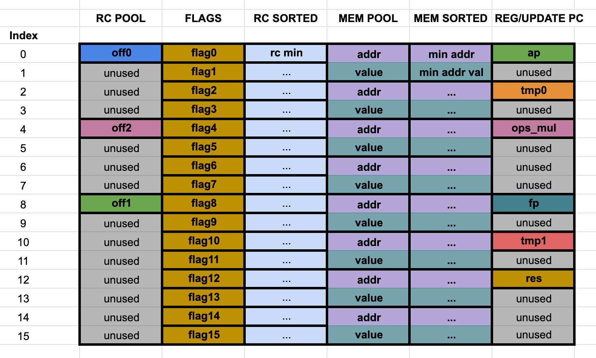

Introduction
This site hosts the main documentation for Lambdaworks as a whole. It is still a work in progress.
FFT Benchmarks
Polynomial interpolation methods comparison
Three methods of polynomial interpolation were benchmarked, with different input sizes each time:
- CPU Lagrange: Finding the Lagrange polynomial of a set of random points via a naive algorithm (see
math/src/polynomial.rs:interpolate()) - CPU FFT: Finding the lowest degree polynomial that interpolates pairs of twiddle factors and Fourier coefficients (the results of applying the Fourier transform to the coefficients of a polynomial) (see
math/src/polynomial.rs:interpolate_fft()). - GPU FFT (Metal): Same as CPU FFT but the FFT algorithm is run on the GPU via the Metal API (Apple).
these were run with criterion-rs in a MacBook Pro M1 (18.3), statistically measuring the total run time of one iteration. The field used was a 256 bit STARK-friendly prime field.
All values of time are in milliseconds. Those cases which were greater than 30 seconds were marked respectively as they're too slow and weren't worth to be benchmarked. The input size refers to d + 1 where d is the polynomial's degree (so size is amount of coefficients).
| Input size | CPU Lagrange | CPU FFT | GPU FFT (Metal) |
|---|---|---|---|
| 2^4 | 2.2 ms | 0.2 ms | 2.5 ms |
| 2^5 | 9.6 ms | 0.4 ms | 2.5 ms |
| 2^6 | 42.6 ms | 0.8 ms | 2.5 ms |
| 2^7 | 200.8 ms | 1.7 ms | 2.9 ms |
| ... | ... | .. | .. |
| 2^21 | >30000 ms | 28745 ms | 574.2 ms |
| 2^22 | >30000 ms | >30000 ms | 1144.9 ms |
| 2^23 | >30000 ms | >30000 ms | 2340.1 ms |
| 2^24 | >30000 ms | >30000 ms | 4652.9 ms |
NOTE: Metal FFT execution includes the Metal state setup, twiddle factors generation and a bit-reverse permutation.
PLONK
PLONK is a popular cryptographic proving system within the Zero Knowledge (ZK) community due to its efficiency and flexibility. It enables the verification of complex computations executed by untrusted parties through the transformation of programs into circuit representations. The system relies on a process called arithmetization, which converts logical circuits into polynomial representations. The main idea behind arithmetization is to express the computation as a set of polynomial equations. The solutions to these equations correspond to the outputs of the circuit. In this section, we will delve into the mechanics of how arithmetization works in PLONK, as well as the protocol used to generate and verify proofs.
The paper can be found here
Notation
We use the following notation.
The symbol denotes a finite field. It is fixed all along. The symbol denotes a primitive root of unity in .
All polynomials have coefficients in and the variable is usually denoted by . We denote polynomials by single letters like . We only denote them as when we want to emphasize the fact that it is a polynomial in , or we need that to explicitly define a polynomial from another one. For example when composing a polynomial with the polynomial , the result being denoted by . The symbol is not used to denote derivatives.
When interpolating at a domain , the symbols denote the Lagrange basis. That is is the polynomial such that for all , and that .
If is a matrix, then denotes the value at the row and column .
The ideas and components
Programs. Our toy example
For better clarity, we'll be using the following toy program throughout this recap.
INPUT:
x
PRIVATE INPUT:
e
OUTPUT:
e * x + x - 1
The observer would have noticed that this program could also be written as , which is more sensible. But the way it is written now serves us to better explain the arithmetization of PLONK. So we'll stick to it.
The idea here is that the verifier holds some value , say . He gives it to the prover. She executes the program using her own chosen value , and sends the output value, say , along with a proof demonstrating correct execution of the program and obtaining the correct output.
In the context of PLONK, both the inputs and outputs of the program are considered public inputs. This may sound odd, but it is because these are the inputs to the verification algorithm. This is the algorithm that takes, in this case, the tuple and outputs Accept if the toy program was executed with input , some private value not revealed to the verifier, and out came . Otherwise it outputs Reject.
PLONK can be used to delegate program executions to untrusted parties, but it can also be used as a proof of knowledge. Our program could be used by a prover to demostrate that she knows the multiplicative inverse of some value in the finite field without revealing it. She would do it by sending the verifier the tuple , where is the proof of the execution of our toy program.
In our toy example this is pointless because inverting field elements is easily performed by any verifier. But change our program to the following and you get proofs of knowledge of the preimage of SHA256 digests.
PRIVATE INPUT:
e
OUTPUT:
SHA256(e)
Here there's no input aside from the prover's private input. As we mentioned, the output of the program is then part of the inputs to the verification algorithm. Which in this case just takes .
PLONK Arithmetization
This is the process that takes the circuit of a particular program and produces a set of mathematical tools that can be used to generate and verify proofs of execution. The end result will be a set of eight polynomials. To compute them we need first to define two matrices. We call them the matrix and the matrix. The polynomials and the matrices depend only on the program and not on any particular execution of it. So they can be computed once and used for every execution instance. To understand what they are useful for, we need to start from execution traces.
Circuits and execution traces
See the program as a sequence of gates that have left operand, a right operand and an output. The two most basic gates are multiplication and addition gates. In our example, one way of seeing our toy program is as a composition of three gates.
Gate 1: left: e, right: x, output: u = e * x Gate 2: left: u, right: x, output: v = e + x Gate 3: left: v, right: 1, output: w = v - 1
On executing the circuit, all these variables will take a concrete value. All that information can be put in table form. It will be a matrix with all left, right and output values of all the gates. One row per gate. We call the columns of this matrix . Let's build them for and . We get , and . So the first matrix is:
| A | B | C |
|---|---|---|
| 2 | 3 | 6 |
| 6 | 3 | 9 |
| 9 | - | 8 |
The last gate subtracts a constant value that is part of the program and is not a variable. So it actually has only one input instead of two. And the output is the result of subtracting to it. That's why it is handled a bit different from the second gate. The symbol "-" in the column is a consequence of that. With that we mean "any value" because it won't change the result. In the next section we'll see how we implement that. Here we'll use this notation when any value can be put there. In case we have to choose some, we'll default to .
What we got is a valid execution trace. Not all matrices of that shape will be the trace of an execution. The matrices and will be the tool we need to distinguish between valid and invalid execution traces.
The matrix
As we said, it only depends on the program itself and not on any particular evaluation of it. It has one row for each gate and its columns are called . They encode the type of gate of the rows and are designed to satisfy the following.
Claim: if columns correspond to a valid evaluation of the circuit then for all the following equality holds
This is better seen with examples. A multiplication gate is represented by the row:
| 0 | 0 | 1 | -1 | 0 |
And the row in the trace matrix that corresponds to the execution of that gate is
| A | B | C |
|---|---|---|
| 2 | 3 | 6 |
The equation in the claim for that row is that , which equals . The next is an addition gate. This is represented by the row
| 1 | 1 | 0 | -1 | 0 |
The corresponding row in the trace matrix its
| A | B | C |
|---|---|---|
| 6 | 3 | 9 |
And the equation of the claim is , which adds up to . Our last row is the gate that adds a constant. Addition by constant C can be represented by the row
| 1 | 0 | 0 | -1 | C |
In our case . The corresponding row in the execution trace is
| A | B | C |
|---|---|---|
| 9 | - | 8 |
And the equation of the claim is . This is also zero.
Putting it altogether, the full matrix is
| 0 | 0 | 1 | -1 | 0 |
| 1 | 1 | 0 | -1 | 0 |
| 1 | 0 | 0 | -1 | -1 |
And we saw that the claim is true for our particular execution:
Not important to our example, but multiplication by constant C can be represented by:
| C | 0 | 0 | -1 | 0 |
As you might have already noticed, there are several ways of representing the same gate in some cases. We'll exploit this in a moment.
The matrix
The claim in the previous section is clearly not an "if and only if" statement because the following trace columns do satisfy the equations but do not correspond to a valid execution:
| A | B | C |
|---|---|---|
| 2 | 3 | 6 |
| 0 | 0 | 0 |
| 20 | - | 19 |
The matrix encodes the carry of the results from one gate to the right or left operand of a subsequent one. These are called wirings. Like the matrix, it's independent of the particular evaluation. It consists of indices for all input and intermediate variables. In this case that matrix is:
| L | R | O |
|---|---|---|
| 0 | 1 | 2 |
| 2 | 1 | 3 |
| 3 | - | 4 |
Here is the index of , is the index of , is the index of , is the index of and is the index of the output . Now we can update the claim to have an "if and only if" statement.
Claim: Let be a matrix with columns . It correspond to a valid evaluation of the circuit if and only if a) for all the following equality holds b) for all such that we have .
So now our malformed example does not pass the second check.
Custom gates
Our matrices are fine now. But they can be optimized. Let's do that to showcase this flexibility of PLONK and also reduce the size of our example.
PLONK has the flexibility to construct more sophisticated gates as combinations of the five columns. And therefore the same program can be expressed in multiple ways. In our case all three gates can actually be merged into a single custom gate. The matrix ends up being a single row.
| 1 | 1 | 1 | -1 | 1 |
and also the matrix
| L | R | O |
|---|---|---|
| 0 | 1 | 2 |
The trace matrix for this representation is just
| A | B | C |
|---|---|---|
| 2 | 3 | 8 |
And we check that it satisfies the equation
Of course, we can't always squash an entire program into a single gate.
Public inputs
Aside from the gates that execute the program operations, additional rows must be incorporated into these matrices. This is due to the fact that the prover must demonstrate not only that she executed the program, but also that she used the appropriate inputs. Furthermore, the proof must include an assertion of the output value. As a result, a few extra rows are necessary. In our case these are the first two and the last one. The original one sits now in the third row.
| -1 | 0 | 0 | 0 | 3 |
| -1 | 0 | 0 | 0 | 8 |
| 1 | 1 | 1 | -1 | 1 |
| 1 | -1 | 0 | 0 | 0 |
And this is the updated matrix
| L | R | O |
|---|---|---|
| 0 | - | - |
| 1 | - | - |
| 2 | 0 | 3 |
| 1 | 3 | - |
The first row is there to force the variable with index to take the value . Similarly the second row forces variable with index to take the value . These two will be the public inputs of the verifier. The last row checks that the output of the program is the claimed one.
And the trace matrix is now
| A | B | C |
|---|---|---|
| 3 | - | - |
| 8 | - | - |
| 2 | 3 | 8 |
| 8 | 8 | - |
With these extra rows, equations add up to zero only for valid executions of the program with input and output .
An astute observer would notice that by incorporating these new rows, the matrix is no longer independent of the specific evaluation. This is because the first two rows of the column contain concrete values that are specific to a particular execution instance. To maintain independence, we can remove these values and consider them as part of an extra one-column matrix called (stands for Public Input). This column has zeros in all rows not related to public inputs. We put zeros in the columns. The responsibility of filling in the matrix is of the prover and verifier. In our example it is
| 3 |
| 8 |
| 0 |
| 0 |
And the final matrix is
| -1 | 0 | 0 | 0 | 0 |
| -1 | 0 | 0 | 0 | 0 |
| 1 | 1 | 1 | -1 | 1 |
| 1 | -1 | 0 | 0 | 0 |
We ended up with two matrices that depend only on the program, and . And two matrices that depend on a particular evaluation, namely the and matrices. The updated version of the claim is the following:
Claim: Let be a matrix with columns . It corresponds to a evaluation of the circuit if and only if a) for all the following equality holds b) for all such that we have .
From matrices to polynomials
In the previous section we showed how the arithmetization process works in PLONK. For a program with public inputs and gates, we constructed two matrices and , of sizes and that satisfy the following. Let
Claim: Let be a matrix with columns and a matrix. They correspond to a valid execution instance with public input given by if and only if a) for all the following equality holds b) for all such that we have , c) for all .
Polynomials enter now to squash most of these equations. We will traduce the set of all equations in conditions (a) and (b) to just a few equations on polynomials.
Let be a primitive -th root of unity and let . Let be the polynomials of degree at most that interpolate the columns at the domain . This means for example that for all . And similarly for all the other columns.
With this, condition (a) of the claim is equivalent to for all in .This is just by definition of the polynomials. But in polynomials land this is also equivalent to (a) there exists a polynomial such that , where is the polynomial .
To reduce condition (b) to polynomial equations we need to introduce the concept of permutation. A permutation is a rearrangement of a set. Usually denoted . For finite sets it is a map from a set to itself that takes all values. In our case the set will be the set of all pairs The matrix induces a permutation of this set where is equal to the indices of the next occurrence of the value at position . If already at the last occurrence, go to the first one. By next we mean the following occurrence as if the columns were stacked on each other. Let's see how this works in the example circuit. Recall is
| L | R | O |
|---|---|---|
| 0 | - | - |
| 1 | - | - |
| 2 | 0 | 3 |
| 1 | 3 | - |
The permutation in this case is the map , , , , , , . For the positions with - values doesn't really matter right now.
It's not hard to see that condition (b) is equivalent to: for all , .
A little less obvious is that this condition is in turn equivalent to checking whether the following sets and are equal The proof this equivalence is straightforward. Give it a try!
In our example the sets in question are respectively and
You can check these sets coincide by inspection. Recall our trace matrix is
| A | B | C |
|---|---|---|
| 3 | - | - |
| 8 | - | - |
| 2 | 3 | 8 |
| 8 | 8 | - |
Checking equality of these sets is something that can be reduced to polynomial equations. It is a very nice method that PLONK uses. To understand it better let's start with a simpler case.
Equality of sets
Suppose we have two sets of two field elements in . And we are interested in checking whether they are equal.
One thing we could do is compute and and compare them. If the sets are equal, then those elements are necessarily equal.
But the converse is not true. For example the sets and both have as the result of the product of their elements. But they are not equal. So this is not good to check equality.
Polynomials come to rescue here. What we can do instead is consider the following sets of polynomials , . Sets and are equal if and only if sets and are equal. This is because equality of polynomials boils down to equality of their coefficients. But the difference with and is that now the approach of multiplying the elements works. That is, and are equal if and only if . This is not entirely evident but follows from a property that polynomials have, called unique factorization. Here the important fact is that linear polynomials act as sort of prime factors. Anyway, you can take that for granted. The last part of this trick is to use the Schwartz-Zippel lemma and go back to the land of field elements. That means, if for some random element we have , then with overwhelming probability the equality holds.
Putting this altogether, if for some random element we have , then the sets and are equal. Of course this also holds for sets with more than two elements. Let's write that down.
Fact: Let and be sets of field elements. If for some random the following equality holds then with overwhelming probability is equal to .
And here comes the trick that reduces this check to polynomial equations. Let be a domain of the form for some primitive -th root of unity . Let and be respectively the polynomials that interpolate the following values at .
Then equals if and only if there exists a polynomial such that for all .
Let's see why. Suppose that equals . Construct as the polynomial that interpolates the following values in the same domain as and . That works. Conversely, suppose such a polynomial exists. By evaluating the equation at and using recursion we get that . Moreover, evaluating it at we obtain that The second equality holds because since it is a -th root of unity. Expanding with the values of and one obtains that equals . Which is what we wanted.
In summary. We proved the following:
Fact: Let and be sets of field elements. Let be a random field element. Let be a primitive -th root of unity and . Let and be respectively the polynomials that interpolate the values and at . If there exists a polynomial such that for all , then with overwhelming probability the sets and are equal.
Sets of tuples
In the previous section we saw how to check whether two sets of field elements are equal using polynomial equations. To be able to use it in our context we need to extend it to sets of tuples of field elements. This is pretty straightforward.
Let's start with the easy case. Let and be two sets of pairs of field elements. That is for all . The trick is very similar to the previous section.
Just as before, by looking at coefficients we can see that the sets and are equal if and only if and are equal. And notice that these are sets of polynomials, we got rid of the tuples! And now the situation is very similar to the previous section. We have that and are equal if and only if the product of their elements coincide. This is true also because polynomials in two variables are a unique factorization domain. So as before, we can use the Schwartz-Zippel lemma. Precisely, if for random , the elements and coincide, then and are equal with overwhelming probability.
Here is the statement for sets of more than two pairs of field elements.
Fact: Let and be sets of pairs of field elements. So that and the same for . Let be a random field elements. Let be a -th root of unity and . Let and be respectively the polynomials that interpolate the values and at . If there exists a polynomial such that for all , then with overwhelming probability the sets and are equal.
Going back to our case
Recall we want to rephrase condition (b) in terms of polynomials. We have already seen that condition (b) is equivalent to and being equal, where and
We cannot directly use the facts of the previous sections because our sets are not sets of field elements. Nor are they sets of pairs of field elements. They are sets of pairs with some indexes in the first coordinate and a field element in the second one. So the solution is to convert them to sets of pairs of field elements and apply the result of the previous section. So how do we map an element of the form to something of the form with and field elements? The second coordinate is trivial, we can just leave as it is and take . For the indexes pair there are multiple ways. The important thing to achieve here is that different pairs get mapped to different field elements. Recall that ranges from to and ranges from to . One way is to take a -th primitive root of unity and define . Putting it altogether, we are mapping the pair to the pair , which is a pair of field elements. Now we can consider the sets and We have that condition (b) is equivalent to and being equal.
Applying the method of the previous section to these sets, we obtain the following.
Fact: Let be a -th root of unity and and random field elements. Let . Let and be the polynomials that interpolate, respectively, the following values at : and Suppose there exists a polynomial such that for all . Then the sets and are equal with overwhelming probability.
One last minute definitions. Notice that is a primitive -th root of unity. Let .
Define to be the interpolation at of Similarly define and to be the interpolation at of the sets of values These will be useful during the protocol to work with such polynomials and the above equations.
A more compact form
The last fact is equivalent the following. There's no new idea here, just a more compact form of the same thing that allows the polynomial to be of degree at most .
Fact: Let be a -th root of unity. Let . Let and be two field elements such that for all . Let and be random field elements. Let and be the polynomials that interpolate, respectively, the following values at : and Suppose there exists a polynomial such that for all . Then the sets and are equal with overwhelming probability.
Common preprocessed input
We have arrived at the eight polynomials we mentioned at the beginning:
These are what's called the common preprocessed input.
Wrapping up the whole thing
Let's try to wrap up what we have so far. We started from a program. We saw that it can be seen as a sequence of gates with left, right and output values. That's called a circuit. From this two matrices and can be computed that capture the gates logic.
Executing the circuit leaves us with matrices and , called the trace matrix and the public input matrix, respectively. Everything we want to prove boils down to check that such matrices are valid. And we have the following result.
Fact: Let be a matrix with columns and a matrix. They correspond to a valid execution instance with public input given by if and only if a) for all the following equality holds b) for all such that we have , c) for all .
Then we constructed polynomials , , off the matrices and . They are the result of interpolating at a domain for some -th primitive root of unity and a few random values. And also constructed polynomials off the matrices and . Loosely speaking, the above fact can be reformulated in terms of polynomial equations as follows.
Fact: Let . Let be a matrix with columns and a matrix. They correspond to a valid execution instance with public input given by if and only if
a) There is a polynomial such that the following equality holds
b) There are polynomials , such that and , where
You might be wondering where the polynomials came from. Recall that for a polynomial , we have for all if and only if for some polynomial .
Finally both conditions (a) and (b) are equivalent to a single equation (c) if we let more randomness to come into play. This is:
(c) Let be a random field element. There is a polynomial such that
This last step is not obvious. You can check the paper to see the proof. Anyway, this is the equation you'll recognize below in the description of the protocol.
Randomness is a delicate matter and an important part of the protocol is where it comes from, who chooses it and when they choose it. Check out the protocol to see how it works.
Protocol
Details and tricks
Polynomial commitment scheme
A polynomial commitment scheme (PCS) is a cryptographic tool that allows one party to commit to a polynomial, and later prove properties of that polynomial. This commitment polynomial hides the original polynomial's coefficients and can be publicly shared without revealing any information about the original polynomial. Later, the party can use the commitment to prove certain properties of the polynomial, such as that it satisfies certain constraints or that it evaluates to a certain value at a specific point.
In the implementation section we'll explain the inner workings of the Kate-Zaverucha-Goldberg scheme, a popular PCS chosen in Lambdaworks for PLONK.
For the moment we only need the following about it:
It consists of a finite group and the following algorithms:
- Commit(): This algorithm takes a polynomial and produces an element of the group . It is called the commitment of and is denoted by . It is homomorphic in the sense that . The former sum being addition of polynomials. The latter is addition in the group .
- Open(, ): It takes a polynomial and a field element and produces an element of the group . This element is called an opening proof for . It is the proof that evaluated at gives .
- Verify(, , , ): It takes group elements and , and also field elements and . With overwhelming probability it outputs Accept if and Reject otherwise.
Blindings
As you will see in the protocol, the prover reveals the value taken by a bunch of the polynomials at a random . In order for the protocol to be Honest Verifier Zero Knowledge, these polynomials need to be blinded. This is a process that makes the values of these polynomials at seemingly random by forcing them to be of certain degree. Here's how it works.
Let's take for example the polynomial the prover constructs. This is the interpolation of the first column of the trace matrix at the domain . This matrix has all of the left operands of all the gates. The prover wishes to keep them secret. Say the trace matrix has rows. And so is . The invariant that the prover cannot violate is that must take the value , for all . This is what the interpolation polynomial satisfies. And is the unique such polynomial of degree at most with such property. But for higher degrees, there are many such polynomials.
The blinding process takes and a desired degree , and produces a new polynomial of degree exactly . This new polynomial satisfies that for all . But outside differs from .
This may seem hard but it's actually very simple. Let be the polynomial . If , with , then sample random values and define
The reason why this does the job is that for all . Therefore the added term vanishes at and leaves the values of at unchanged.
Linearization trick
This is an optimization in PLONK to reduce the number of checks of the verifier.
One of the main checks in PLONK boils down to check that , with some polynomial that looks like , and so on. In particular the verifier needs to get the value from somewhere.
For the sake of simplicity, in this section assume is exactly . Secret to the prover here are only . The polynomials and are known also to the verifier. The verifier will already have the commitments and . So the prover could send just , along with their opening proofs and let the verifier compute by himself and . Then with all these values the verifier could compute . And also use his commitments to validate the opening proofs of and .
This has the problem that computing and is expensive. The prover can instead save the verifier this by sending also along with opening proofs. Since the verifier will have the commitments and beforehand, he can check that the prover is not cheating and cheaply be convinced that the claimed values are actually and . This is much better. It involves the check of four opening proofs and the computation of off the values received from the prover. But it can be further improved as follows.
As before, the prover sends along with their opening proofs. She constructs the polynomial . She sends the value along with an opening proof of it. Notice that the value of is exactly . The verifier can compute by himself as . The verifier has everything to check all three openings and get convinced that the claimed value is true. And this value is actually . So this means no more work for the verifier. And the whole thing got reduced to three openings.
This is called the linearization trick. The polynomial is called the linearization of .
Setup
There's a one time setup phase to compute some values common to any execution and proof of the particular circuit. Precisely, the following commitments are computed and published.
Proving algorithm
Next we describe the proving algorithm for a program of size . That includes public inputs. Let be a primitive -th root of unity. Let . Define .
Assume the eight polynomials of common preprocessed input are already given.
The prover computes the trace matrix as described in the first sections. That means, with the first rows corresponding to the public inputs. It should be a matrix.
Round 1
Add to the transcript the following:
Compute polynomials as the interpolation polynomials of the columns of at the domain . Sample random Let
Compute and add them to the transcript.
Round 2
Sample from the transcript.
Let and define recursively for .
Compute the polynomial as the interpolation polynomial at the domain of the values .
Sample random values and let .
Compute and add it to the transcript.
Round 3
Sample from the transcript.
Let be the interpolation of the public input matrix at the domain .
Let
and define . Compute such that . Write with and polynomials of degree at most .
Sample random and define
Compute and add them to the transcript.
Round 4
Sample from the transcript.
Compute and add them to the transcript.
Round 5
Sample from the transcript.
Let
Define
The subscript stands for "non constant", as is the part of the linearization of that has non constant factors. The subscript "partial" indicates that it is a partial evaluation of at . Partial meaning that only some power of ar replaced by the powers of . So in particular .
Let be the opening proof at of the polynomial defined as
Let be the opening proof at of the polynomial .
Compute and .
Proof
The proof is:
Verification algorithm
Transcript initialization
The first step is to initialize the transcript in the same way the prover did, adding to it the following elements.
Extraction of values and commitments
Challenges
Firstly, the verifier needs to compute all the challenges. For that, he follows these steps:
- Add to the transcript.
- Sample two challenges .
- Add to the transcript.
- Sample a challenge .
- Add to the transcript.
- Sample a challenge .
- Add to the transcript.
- Sample a challenge .
Compute
Also he needs compute a few values off all these data. First, he computes the matrix with the public inputs and outputs. He needs to compute , where is the interpolation of at the domain . But he doesn't need to compute . He can instead compute as where is the number of public inputs and is the Lagrange basis at the domain .
Compute claimed values of and
He computes
This is the constant part of the linearization of . So adding it to what the prover claims to be , he obtains
With respect to , this is actually already .
Compute and
He computes these off the commitments in the proof as follows
For , first compute
Then .
Compute claimed value and
Compute as
Also, the commitment of the polynomial is
Proof check
Now the verifier has all the necessary values to proceed with the checks.
- Check that equals .
- Verify the opening of at . That is, check that outputs Accept.
- Verify the opening of at . That is, check the validity of the proof using the commitment and the value . That is, check that outputs Accept.
If all checks pass, he outputs Accept. Otherwise outputs Reject.
Implementation
In this section we discuss the implementation details of the PLONK algorithm. We use the notation and terminology of the protocol and recap sections.
At the moment our API supports the backend of PLONK. That is, all the setup, prove and verify algorithms. We temporarily rely on external sources for the definition of a circuit and the creation of the and matrices, as well as the execution of it to obtain the trace matrix . We mainly use gnark temporarily for that purpose.
So to generate proofs and validate them, we need to feed the algorithms with precomputed values of the , and matrices, and the primitive root of unity .
Let us see our API on a test circuit that provides all these values. The program in this case is the one that takes an input , a private input and computes . As in the toy example of the recap, the output of the program is added to the public inputs and the circuit actually asserts that the output is the claimed value. So more precisely, the prover will generate a proof for the statement ASSERT(x*e+5==y), where both are public inputs.
Usage
Here is the happy path.
#![allow(unused)] fn main() { // This is the common preprocessed input for // the test circuit ( ASSERT(x * e + 5 == y) ) let common_preprocessed_input = test_common_preprocessed_input_2(); // Input let x = FieldElement::from(2_u64); // Private input let e = FieldElement::from(3_u64); let y, witness = test_witness_2(x, e); let srs = test_srs(common_preprocessed_input.n); let kzg = KZG::new(srs); let verifying_key = setup(&common_preprocessed_input, &kzg); let random_generator = TestRandomFieldGenerator {}; let prover = Prover::new(kzg.clone(), random_generator); let public_input = vec![x.clone(), y]; let proof = prover.prove( &witness, &public_input, &common_preprocessed_input, &verifying_key, ); let verifier = Verifier::new(kzg); assert!(verifier.verify( &proof, &public_input, &common_preprocessed_input, &verifying_key )); }
Let's brake it down. The helper function test_common_preprocessed_input_2() returns an instance of the following struct for the particular test circuit:
#![allow(unused)] fn main() { pub struct CommonPreprocessedInput<F: IsField> { pub n: usize, pub domain: Vec<FieldElement<F>>, pub omega: FieldElement<F>, pub k1: FieldElement<F>, pub ql: Polynomial<FieldElement<F>>, pub qr: Polynomial<FieldElement<F>>, pub qo: Polynomial<FieldElement<F>>, pub qm: Polynomial<FieldElement<F>>, pub qc: Polynomial<FieldElement<F>>, pub s1: Polynomial<FieldElement<F>>, pub s2: Polynomial<FieldElement<F>>, pub s3: Polynomial<FieldElement<F>>, pub s1_lagrange: Vec<FieldElement<F>>, pub s2_lagrange: Vec<FieldElement<F>>, pub s3_lagrange: Vec<FieldElement<F>>, } }
Apart from the eight polynomials in the canonical basis, we store also here the number of constraints , the domain , the primitive -th of unity and the element . The element will be . For convenience, we also store the polynomials in Lagrange form.
The following lines define the particular values of the program input and the private input .
#![allow(unused)] fn main() { // Input let x = FieldElement::from(2_u64); // Private input let e = FieldElement::from(3_u64); let y, witness = test_witness_2(x, e); }
The function test_witness_2(x, e) returns an instance of the following struct, that holds the polynomials that interpolate the columns of the trace matrix .
#![allow(unused)] fn main() { pub struct Witness<F: IsField> { pub a: Vec<FieldElement<F>>, pub b: Vec<FieldElement<F>>, pub c: Vec<FieldElement<F>>, } }
Next the commitment scheme KZG (Kate-Zaverucha-Goldberg) is instantiated.
#![allow(unused)] fn main() { let srs = test_srs(common_preprocessed_input.n); let kzg = KZG::new(srs); }
The setup function performs the setup phase. It only needs the common preprocessed input and the commitment scheme.
#![allow(unused)] fn main() { let verifying_key = setup(&common_preprocessed_input, &kzg); }
It outputs an instance of the struct VerificationKey.
#![allow(unused)] fn main() { pub struct VerificationKey<G1Point> { pub qm_1: G1Point, pub ql_1: G1Point, pub qr_1: G1Point, pub qo_1: G1Point, pub qc_1: G1Point, pub s1_1: G1Point, pub s2_1: G1Point, pub s3_1: G1Point, } }
It stores the commitments of the eight polynomials of the common preprocessed input. The suffix _1 means it is a commitment. It comes from the notation , where is a polynomial.
Then a prover is instantiated
#![allow(unused)] fn main() { let random_generator = TestRandomFieldGenerator {}; let prover = Prover::new(kzg.clone(), random_generator); }
The prover is an instance of the struct Prover:
#![allow(unused)] fn main() { pub struct Prover<F, CS, R> where F: IsField, CS: IsCommitmentScheme<F>, R: IsRandomFieldElementGenerator<F> { commitment_scheme: CS, random_generator: R, phantom: PhantomData<F>, } }
It stores an instance of a commitment scheme and a random field element generator needed for blinding polynomials.
Then the public input is defined. As we mentioned in the recap, the public input contains the output of the program.
#![allow(unused)] fn main() { let public_input = vec![x.clone(), y]; }
We then generate a proof using the prover's method prove
#![allow(unused)] fn main() { let proof = prover.prove( &witness, &public_input, &common_preprocessed_input, &verifying_key, ); }
The output is an instance of the struct Proof.
#![allow(unused)] fn main() { pub struct Proof<F: IsField, CS: IsCommitmentScheme<F>> { // Round 1. /// Commitment to the wire polynomial `a(x)` pub a_1: CS::Commitment, /// Commitment to the wire polynomial `b(x)` pub b_1: CS::Commitment, /// Commitment to the wire polynomial `c(x)` pub c_1: CS::Commitment, // Round 2. /// Commitment to the copy constraints polynomial `z(x)` pub z_1: CS::Commitment, // Round 3. /// Commitment to the low part of the quotient polynomial t(X) pub t_lo_1: CS::Commitment, /// Commitment to the middle part of the quotient polynomial t(X) pub t_mid_1: CS::Commitment, /// Commitment to the high part of the quotient polynomial t(X) pub t_hi_1: CS::Commitment, // Round 4. /// Value of `a(ζ)`. pub a_zeta: FieldElement<F>, /// Value of `b(ζ)`. pub b_zeta: FieldElement<F>, /// Value of `c(ζ)`. pub c_zeta: FieldElement<F>, /// Value of `S_σ1(ζ)`. pub s1_zeta: FieldElement<F>, /// Value of `S_σ2(ζ)`. pub s2_zeta: FieldElement<F>, /// Value of `z(ζω)`. pub z_zeta_omega: FieldElement<F>, // Round 5 /// Value of `p_non_constant(ζ)`. pub p_non_constant_zeta: FieldElement<F>, /// Value of `t(ζ)`. pub t_zeta: FieldElement<F>, /// Batch opening proof for all the evaluations at ζ pub w_zeta_1: CS::Commitment, /// Single opening proof for `z(ζω)`. pub w_zeta_omega_1: CS::Commitment, } }
Finally, we instantiate a verifier.
#![allow(unused)] fn main() { let verifier = Verifier::new(kzg); }
It's an instance of Verifier:
#![allow(unused)] fn main() { struct Verifier<F: IsField, CS: IsCommitmentScheme<F>> { commitment_scheme: CS, phantom: PhantomData<F>, } }
Finally, we call the verifier's method verify that outputs a bool.
#![allow(unused)] fn main() { assert!(verifier.verify( &proof, &public_input, &common_preprocessed_input, &verifying_key )); }
Padding
All the matrices are padded with dummy rows so that their length is a power of two. To be able to interpolate their columns, we need a primitive root of unity of that order. Given the particular field used in our implementation, that means that the maximum possible size for a circuit is .
The entries of the dummy rows are filled in with zeroes in the , and matrices. The matrix needs to be consistent with the matrix. Therefore it is filled with the value of the variable with index .
Some other rows in the matrix have also dummy values. These are the rows corresponding to the and columns of the public input rows. In the recap we denoted them with the empty - symbol. They are filled in with the same logic as the padding rows, as well as the corresponding values in the matrix.
Implementation details
The implementation pretty much follows the rounds as are described in the protocol section. There are a few details that are worth mentioning.
Commitment Scheme
The commitment scheme we use is the Kate-Zaverucha-Goldberg scheme with the BLS 12 381 curve and the ate pairing. It can be found in the commitments module of the lambdaworks_crypto package.
The order of the cyclic subgroup is
0x73eda753299d7d483339d80809a1d80553bda402fffe5bfeffffffff00000001
The maximum power of two that divides is . Therefore, that is the maximum possible order for a primitive root of unity in with order a power of two.
Fiat-Shamir
Transcript strategy
Here we describe our implementation of the transcript used for the Fiat-Shamir heuristic.
A Transcript exposes two methods: append and challenge.
The method append adds a message to the transcript by updating the internal state of the hasher with the raw bytes of the message.
The method challenge returns the result of the hasher using the current internal state of the hasher. It subsequently resets the hasher and updates the internal state with the last result.
Here is an example of this process:
- Start a fresh transcript.
- Call
appendand passmessage_1. - Call
appendand passmessage_2. - The internal state of the hasher at this point is
message_2 || message_1. - Call
challenge. The output isHash(message_2 || message_1). - Call
appendand passmessage_3. - Call
challenge. The output isHash(message_3 || Hash(message_2 || message_1)). - Call
appendand passmessage_4.
The internal state of the hasher at the end of this exercise is message_4 || Hash(message_3 || Hash(message_2 || message_1))
The underlying hasher function we use is h=sha3.
Field elements
The result of every challenge is a -bit string, which is interpreted as an integer in big-endian order. A field element is constructed out of it by taking modulo the field order. The prime field used in this implementation has a -bit order. Therefore some field elements are more probable to occur than others because they have more representatives as 256-bit integers.
Strong Fiat-Shamir
The first messages added to the transcript are all commitments of the polynomials of the common preprocessed input and the values of the public inputs. This prevents a known vulnerability called "weak Fiat-Shamir". Check out the following resources to learn more about it.
- What can go wrong (zkdocs)
- How not to Prove Yourself: Pitfalls of the Fiat-Shamir Heuristic and Applications to Helios
- Weak Fiat-Shamir Attacks on Modern Proof Systems
Circuit API
In this section, we'll discuss how to build your own constraint system to prove the execution of a particular program.
Simple Example
Let's take the following simple program as an example. We have two public inputs: x and y. We want to prove to a verifier that we know a private input e such that x * e = y. You can achieve this by building the following constraint system:
use lambdaworks_plonk::constraint_system::ConstraintSystem; use lambdaworks_math::elliptic_curve::short_weierstrass::curves::bls12_381::default_types::FrField; fn main() { let system = &mut ConstraintSystem::<FrField>::new(); let x = system.new_public_input(); let y = system.new_public_input(); let e = system.new_variable(); let z = system.mul(&x, &e); // This constraint system asserts that x * e == y system.assert_eq(&y, &z); }
This code creates a constraint system over the field of the BLS12381 curve. Then, it creates three variables: two public inputs x and y, and a private variable e. Note that every variable is private except for the public inputs. Finally, it adds the constraints that represent a multiplication and an assertion.
Before generating proofs for this system, we need to run a setup and obtain a verifying key:
#![allow(unused)] fn main() { let common = CommonPreprocessedInput::from_constraint_system(&system, &ORDER_R_MINUS_1_ROOT_UNITY); let srs = test_srs(common.n); let kzg = KZG::new(srs); // The commitment scheme for plonk. let vk = setup(&common, &kzg); }
Now we can generate proofs for our system. We just need to specify the public inputs and obtain a witness that is a solution for our constraint system:
#![allow(unused)] fn main() { let inputs = HashMap::from([(x, FieldElement::from(4)), (e, FieldElement::from(3))]); let assignments = system.solve(inputs).unwrap(); let witness = Witness::new(assignments, &system); }
Once you have all these ingredients, you can call the prover:
#![allow(unused)] fn main() { let public_inputs = system.public_input_values(&assignments); let prover = Prover::new(kzg.clone(), TestRandomFieldGenerator {}); let proof = prover.prove(&witness, &public_inputs, &common, &vk); }
and verify:
#![allow(unused)] fn main() { let verifier = Verifier::new(kzg); assert!(verifier.verify(&proof, &public_inputs, &common, &vk)); }
Building Complex Systems
Some operations are common, and it makes sense to wrap the set of constraints that do these operations in a function and use it several times. Lambdaworks comes with a collection of functions to help you build your own constraint systems, such as conditionals, inverses, and hash functions.
However, if you have an operation that does not come with Lambdaworks, you can easily extend Lambdaworks functionality. Suppose that the exponentiation operation is something common in your program. You can write the square and multiply algorithm and put it inside a function:
#![allow(unused)] fn main() { pub fn pow( system: &mut ConstraintSystem<FrField>, base: Variable, exponent: Variable, ) -> Variable { let exponent_bits = system.new_u32(&exponent); let mut result = system.new_constant(FieldElement::one()); for i in 0..32 { if i != 0 { result = system.mul(&result, &result); } let result_times_base = system.mul(&result, &base); result = system.if_else(&exponent_bits[i], &result_times_base, &result); } result } }
This function can then be used to modify our simple program from the previous section. The following circuit checks that the prover knows e such that pow(x, e) = y:
use lambdaworks_plonk::constraint_system::ConstraintSystem; use lambdaworks_math::elliptic_curve::short_weierstrass::curves::bls12_381::default_types::FrField; fn main() { let system = &mut ConstraintSystem::<FrField>::new(); let x = system.new_public_input(); let y = system.new_public_input(); let e = system.new_variable(); let z = pow(system, &x, &e); system.assert_eq(&y, &z); }
You can keep composing these functions in order to create more complex systems.
STARK Prover
The goal of this document is to give a good a understanding of our stark prover code. To this end, in the first section we go through a recap of how the proving system works at a high level mathematically; then we dive into how that's actually implemented in our code.
STARKs Recap
Verifying Computation through Polynomials
In general, we express computation in our proving system by providing an execution trace satisfying certain constraints. The execution trace is a table containing the state of the system at every step of computation. This computation needs to follow certain rules to be valid; these rules are our constraints.
The constraints for our computation are expressed using an Algebraic Intermediate Representation or AIR. This representation uses polynomials to encode constraints, which is why sometimes they are called polynomial constraints.
To make all this less abstract, let's go through two examples.
Fibonacci numbers
Throughout this section and the following we will use this example extensively to have a concrete example. Even though it's a bit contrived (no one cares about computing fibonacci numbers), it's simple enough to be useful. STARKs and proving systems in general are very abstract things; having an example in mind is essential to not get lost.
Let's say our computation consists of calculating the k-th number in the fibonacci sequence. This is just the sequence of numbers \(a_n\) satisfying
\[ a_0 = 1 \] \[ a_1 = 1 \] \[ a_{n+2} = a_{n + 1} + a_n \]
An execution trace for this just consists of a table with one column, where each row is the i-th number in the sequence:
| a_i |
|---|
| 1 |
| 1 |
| 2 |
| 3 |
| 5 |
| 8 |
| 13 |
| 21 |
A valid trace for this computation is a table satisfying two things:
- The first two rows are
1. - The value on any other row is the sum of the two preceding ones.
The first item is called a boundary constraint, it just enforces specific values on the trace at certain points. The second one is a transition constraint; it tells you how to go from one step of computation to the next.
Cairo
The example above is extremely useful to have a mental model, but it's not really useful for anything else. The problem is it just works for the very narrow example of computing fibonacci numbers. If we wanted to prove execution of something else, we would have to write an AIR for it.
What we're actually aiming for is an AIR for an entire general purpose Virtual Machine. This way, we can provide proofs of execution for any computation using just one AIR. This is what cairo as a programming language does. Cairo code compiles to the bytecode of a virtual machine with an already defined AIR. The general flow when using cairo is the following:
- User writes a cairo program.
- The program is compiled into Cairo's VM bytecode.
- The VM executes said code and provides an execution trace for it.
- The trace is passed on to a STARK prover, which creates a proof of correct execution according to Cairo's AIR.
- The proof is passed to a verifier, who checks that the proof is valid.
Ultimately, our goal is to give the tools to write a STARK prover for the cairo VM and do so. However, this is not a good example to start out as it's incredibly complex. The execution trace of a cairo program has around 30 columns, some for general purpose registers, some for other reasons. Cairo's AIR contains a lot of different transition constraints, encoding all the different possible instructions (arithmetic operations, jumps, etc).
Use the fibonacci example as your go-to for understanding all the moving parts; keep the Cairo example in mind as the thing we are actually building towards.
Fibonacci step by step walkthrough
Below we go through a step by step explanation of a STARK prover. We will assume the trace of the fibonacci sequence mentioned above; it consists of only one column of length \(2^n\). In this case, we'll take n=3. The trace looks like this
| a_i |
|---|
| a_0 |
| a_1 |
| a_2 |
| a_3 |
| a_4 |
| a_5 |
| a_6 |
| a_7 |
Trace polynomial
The first step is to interpolate these values to generate the trace polynomial. This will be a polynomial encoding all the information about the trace. The way we do it is the following: in the finite field we are working in, we take an 8-th primitive root of unity, let's call it g. It being a primitive root means two things:
gis an8-th root of unity, i.e., \(g^8 = 1\).- Every
8-th root of unity is of the form \(g^i\) for some \(0 \leq i \leq 7\).
With g in hand, we take the trace polynomial t to be the one satisfying
From here onwards, we will talk about the validity of the trace in terms of properties that this polynomial must satisfy. We will also implicitly identify a certain power of \(g\) with its corresponding trace element, so for example we sometimes think of \(g^5\) as \(a_5\), the fifth row in the trace, even though technically it's \(t\) evaluated in \(g^5\) that equals \(a_5\).
We talked about two different types of constraints the trace must satisfy to be valid. They were:
- The first two rows are
1. - The value on any other row is the sum of the two preceding ones.
In terms of t, this translates to
- \(t(g^0) = 1\) and \(t(g) = 1\).
- \(t(x g^2) - t(xg) - t(x) = 0\) for all \(x \in {g^0, g^1, g^2, g^3, g^4, g^5}\). This is because multiplying by
gis the same as advancing a row in the trace.
Composition Polynomial
To convince the verifier that the trace polynomial satisfies the relationships above, the prover will construct another polynomial that shows that both the boundary and transition constraints are satisfied and commit to it. We call this polynomial the composition polynomial, and usually denote it with \(H\). Constructing it involves a lot of different things, so we'll go step by step introducing all the moving parts required.
Boundary polynomial
To show that the boundary constraints are satisfied, we construct the boundary polynomial. Recall that our boundary constraints are \(t(g^0) = t(g) = 1\). Let's call \(P\) the polynomial that interpolates these constraints, that is, \(P\) satisfies:
The boundary polynomial \(B\) is defined as follows:
The denominator here is called the boundary zerofier, and it's the polynomial whose roots are the elements of the trace where the boundary constraints must hold.
How does \(B\) encode the boundary constraints? The idea is that, if the trace satisfies said constraints, then
so \(t(x) - P(x)\) has \(1\) and \(g\) as roots. Showing these values are roots is the same as showing that \(B(x)\) is a polynomial instead of a rational function, and that's why we construct \(B\) this way.
Transition constraint polynomial
To convince the verifier that the transition constraints are satisfied, we construct the transition constraint polynomial and call it \(C(x)\). It's defined as follows:
How does \(C\) encode the transition constraints? We mentioned above that these are satisfied if the polynomial in the numerator vanishes in the elements \({g^0, g^1, g^2, g^3, g^4, g^5}\). As with \(B\), this is the same as showing that \(C(x)\) is a polynomial instead of a rational function.
Constructing \(H\)
With the boundary and transition constraint polynomials in hand, we build the composition polynomial \(H\) as follows: The verifier will sample four numbers \(\beta_1, \beta_2\) and \(H\) will be
Why not just take \(H(x) = B(x) + C(x)\)? The reason for the betas is to make the resulting \(H\) be always different and unpredictable for the prover, so they can't precompute stuff beforehand.
With what we discussed above, showing that the constraints are satisfied is equivalent to saying that H is a polynomial and not a rational function (we are simplifying things a bit here, but it works for our purposes).
Commiting to \(H\)
To show \(H\) is a polynomial we are going to use the FRI protocol, which we treat as a black box. For all we care, a FRI proof will verify if what we committed to is indeed a polynomial. Thus, the prover will provide a FRI commitment to H, and if it passes, the verifier will be convinced that the constraints are satisfied.
There is one catch here though: how does the verifier know that FRI was applied to H and not any other polynomial? For this we need to add an additional step to the protocol.
Consistency check
After commiting to H, the prover needs to show that H was constructed correctly according to the formula above. To do this, it will ask the prover to provide an evaluation of H on some random point z and evaluations of the trace at the points \(t(z), t(zg)\) and \(t(zg^2)\).
Because the boundary and transition constraints are a public part of the protocol, the verifier knows them, and thus the only thing it needs to compute the evaluation \((z)\) by itself are the three trace evaluations mentioned above. Because it asked the prover for them, it can check both sides of the equation:
and be convinced that \(H\) was constructed correctly.
We are still not done, however, as the prover could have now cheated on the values of the trace or composition polynomial evaluations.
Deep Composition Polynomial
There are two things left the prover needs to show to complete the proof:
- That \(H\) effectively is a polynomial, i.e., that the constraints are satisfied.
- That the evaluations the prover provided on the consistency check were indeed evaluations of the trace polynomial and composition polynomial on the out of domain point
z.
Earlier we said we would use the FRI protocol to commit to H and show the first item in the list. However, we can slightly modify the polynomial we do FRI on to show both the first and second items at the same time. This new modified polynomial is called the DEEP composition polynomial. We define it as follows:
where the numbers \(\gamma_i\) are randomly sampled by the verifier.
The high level idea is the following: If we apply FRI to this polynomial and it verifies, we are simultaneously showing that
- \(H\) is a polynomial and the prover indeed provided
H(z)as one of the out of domain evaluations. This is the first summand inDeep(x). - The trace evaluations provided by the prover were the correct ones, i.e., they were \(t(z)\), \(t(zg)\), and \(t(zg^2)\). These are the remaining summands of the
Deep(x).
Consistency check
The prover needs to show that Deep was constructed correctly according to the formula above. To do this, the verifier will ask the prover to provide:
- An evaluation of
Honzandx_0 - Evaluations of the trace at the points \(t(z)\), \(t(zg)\), \(t(zg^2)\) and \(t(x_0)\)
Where z is the same random, out of domain point used in the consistency check of the composition polynomial, and x_0 is a random point that belongs to the trace domain.
With the values provided by the prover, the verifier can check both sides of the equation:
The prover also needs to show that the trace evaluation \(t(x_0)\) belongs to the trace. To achieve this, it needs to commit the merkle roots of t and the merkle proof of \(t(x_0)\).
Summary
We summarize below the steps required in a STARK proof for both prover and verifier.
Prover side
- Compute the trace polynomial
tby interpolating the trace column over a set of \(2^n\)-th roots of unity \({g^i : 0 \leq i < 2^n}\). - Compute the boundary polynomial
B. - Compute the transition constraint polynomial
C. - Construct the composition polynomial
HfromBandC. - Sample an out of domain point
zand provide the evaluations \(H(z)\), \(t(z)\), \(t(zg)\), and \(t(zg^2)\) to the verifier. - Sample a domain point
x_0and provide the evaluations \(H(x_0)\) and \(t(x_0)\) to the verifier. - Construct the deep composition polynomial
Deep(x)fromH,t, and the evaluations from the item above. - Do
FRIonDeep(x)and provide the resulting FRI commitment to the verifier. - Provide the merkle root of
tand the merkle proof of \(t(x_0)\).
Verifier side
- Take the evaluations \(H(z)\), \(H(x_0)\), \(t(z)\), \(t(zg)\), \(t(zg^2)\) and \(t(x_0)\) the prover provided.
- Reconstruct the evaluations \(B(z)\) and \(C(z)\) from the trace evaluations we were given. Check that the claimed evaluation \(H(z)\) the prover gave us actually satisfies
- Check that the claimed evaluation \(Deep(x_0)\) the prover gave us actually satisfies
- Using the merkle root and the merkle proof the prover provided, check that \(t(x_0)\) belongs to the trace.
- Take the provided
FRIcommitment and check that it verifies.
Simplifications and Omissions
The walkthrough above was for the fibonacci example which, because of its simplicity, allowed us to sweep under the rug a few more complexities that we'll have to tackle on the implementation side. They are:
Multiple trace columns
Our trace contained only one column, but in the general setting there can be multiple (the Cairo AIR has around 30). This means there isn't just one trace polynomial, but several; one for each column. This also means there are multiple boundary constraint polynomials.
The general idea, however, remains the same. The deep composition polynomial H is now the sum of several terms containing the boundary constraint polynomials \(B_1(x), \dots, B_k(x)\) (one per column), and each \(B_i\) is in turn constructed from the \(i\)-th trace polynomial \(t_i(x)\).
Multiple transition constraints
Much in the same way, our fibonacci AIR had only one transition constraint, but there could be several. We will therefore have multiple transition constraint polynomials \(C_1(x), \dots, C_n(x)\), each of which encodes a different relationship between rows that must be satisfied. Also, because there are multiple trace columns, a transition constraint can mix different trace polynomials. One such constraint could be
which means "The first column on the next row has to be equal to the second column in the current row".
Again, even though this seems way more complex, the ideas remain the same. The composition polynomial H will now include a term for every \(C_i(x)\), and for each one the prover will have to provide out of domain evaluations of the trace polynomials at the appropriate values. In our example above, to perform the consistency check on \(C_1(x)\) the prover will have to provide the evaluations \(t_1(zg)\) and \(t_2(z)\).
Composition polynomial decomposition
In the actual implementation, we won't commit to \(H\), but rather to a decomposition of \(H\) into an even term \(H_1(x)\) and an odd term \(H_2(x)\), which satisfy
This way, we don't commit to \(H\) but to \(H_1\) and \(H_2\). This is just an optimization at the code level; once again, the ideas remain exactly the same.
FRI, low degree extensions and roots of unity
We treated FRI as a black box entirely. However, there is one thing we do need to understand about it: low degree extensions.
When applying FRI to a polynomial of degree \(n\), we need to provide evaluations of it over a domain with more than \(n\) points. In our case, the DEEP composition polynomial's degree is around the same as the trace's, which is, at most, \(2^n - 1\) (because it interpolates the trace containing \(2^n\) points).
The domain we are going to choose to evaluate our DEEP polynomial on will be a set of higher roots of unity. In our fibonacci example, we will take a primitive \(16\)-th root of unity \(\omega\). As a reminder, this means:
- \(\omega\) is an \(16\)-th root of unity, i.e., \(\omega^{16} = 1\).
- Every \(16\)-th root of unity is of the form \(\omega^i\) for some \(0 \leq i \leq 15\).
Additionally, we also take it so that \(\omega\) satisfies \(\omega^2 = g\) (\(g\) being the \(8\)-th primitive root of unity we used to construct t).
The evaluation of \(t\) on the set \({\omega^i : 0 \leq i \leq 15}\) is called a low degree extension (LDE) of \(t\). Notice this is not a new polynomial, they're evaluations of \(t\) on some set of points. Also note that, because \(\omega^2 = g\), the LDE contains all the evaluations of \(t\) on the set of powers of \(g\). In fact,
This will be extremely important when we get to implementation.
For our LDE, we chose \(16\)-th roots of unity, but we could have chosen any other power of two greater than \(8\). In general, this choice is called the blowup factor, so that if the trace has \(2^n\) elements, a blowup factor of \(b\) means our LDE evaluates over the \(2^{n} * b\) roots of unity (\(b\) needs to be a power of two). The blowup factor is a parameter of the protocol related to its security.
Protocol Overview
In this section, we start diving deeper before showing the formal protocol. If you haven't done so, we recommend reading the "Recap" section first.
At a high level, the protocol works as follows. The starting point is a matrix that encodes the trace of a valid execution of the program. This matrix needs to be in a particular format so that its correctness is equivalent to checking a finite number of polynomial equations on its rows. Transforming the execution to this matrix is what's called the arithmetization process.
Then a single polynomial is constructed that encodes the set of all the polynomial constraints. The satisfiability of all these constraints is equivalent to being divisible by some public polynomial . So the prover constructs as the quotient called the composition polynomial.
Then the verifier chooses a random point and challenges the prover to reveal the values and . Then the verifier checks that , which convinces him that the same relation holds at a level of polynomials and, in consequence, convinces the verifier that the private trace of the prover is valid.
In summary, at a very high level, the STARK protocol can be organized into three major parts:
- Arithmetization and commitment of execution trace.
- Construction and commitment of composition polynomial .
- Opening of polynomials at random .
Arithmetization
As the Recap mentions, the trace is a table containing the system's state at every step. In this section, we will denote the trace as . A trace can have several columns to store different aspects or features of a particular state at a specific moment. We will refer to the -th column as . You can think of a trace as a matrix where the entry is the -th element of the -th state.
Most proving systems' primary tool is polynomials over a finite field . Each column of the trace will be interpreted as evaluations of such a polynomial . Consequently, any information about the states must be encoded somehow as an element in .
To ease notation, we will assume here and in the protocol that the constraints encoding transition rules depend only on a state and the previous one. Everything can be easily generalized to transitions that depend on many preceding states. Then, constraints can be expressed as multivariate polynomials in variables A transition from state to state will be valid if and only if when we plug row of in the first variables and row in the second variables of , we get for all . In mathematical notation, this is
These are called transition constraints and check the trace's local properties, where local means relative to specific rows. There is another type of constraint, called boundary constraint, and denoted . These enforce parts of the trace to take particular values. It is helpful, for example, to verify the initial states.
So far, these constraints can only express the local properties of the trace. There are situations where the global properties of the trace need to be checked for consistency. For example, a column may need to take all values in a range but not in any predefined way. Several methods exist to express these global properties as local by adding redundant columns. Usually, they need to involve randomness from the verifier to make sense, and they turn into an interactive protocol called Randomized AIR with Preprocessing.
Polynomial commitment scheme
To make interactions possible, a crucial cryptographic primitive is the Polynomial Commitment Scheme. This prevents the prover from changing the polynomials to adjust them to what the verifier expects.
Such a scheme consists of the commit and the open protocols. STARK uses a univariate polynomial commitment scheme that internally combines a vector commitment scheme and a protocol called FRI. Let's begin with these two components and see how they build up the polynomial commitment scheme.
Vector commitments
Given a vector , commiting to means the following. The prover builds a Merkle tree out of it and sends its root to the verifier. The verifier can then ask the prover to reveal, or open, the value of the vector at some index . The prover won't have any choice except to send the correct value. The verifier will expect the corresponding value and the authentication path to the tree's root to check its authenticity. The authentication path also encodes the vector's position and its length .
The root of the Merkle tree is said to be the commitment of , and we denote it here by .
FRI
In STARKs, all commited vectors are of the form for some polynomial and some fixed domain . The domain is always known to the prover and the verifier. It can be proved, as long as is less than the total number of field elements, that every vector is equal to for a unique polynomial of degree at most . This is called the Lagrange interpolation theorem. It means, there is a unique polynomial of degree at most such that for all . And is an upper bound to the degree of . It could be less. For example, the vector of all ones is the evaluation of the constant polynomial , which has degree .
Suppose the vector is the vector of evaluations of a polynomial of degree strictly less than . Suppose one party holds the vector and another party holds only the commitment of it. The FRI protocol is an efficient interactive protocol with which the former can convince the latter that the commitment they hold corresponds to the vector of evaluations of a polynomial of degree strictly less than .
More precisely, the protocol depends on the following parameters
- Powers of two and with .
- A vector , with , with a nonzero value in and a primitive -root of unity
A prover holds a vector , and the verifier holds the commitment of it. The result of the FRI protocol will be Accept if the unique polynomial of degree less than such that has degree less than . Even more precisely, the protocol proves that is very close to a vector with of degree less than , but it may differ in negligible proportion of the coordinates.
The number is called the blowup factor and the security of the protocol depends in part on this parameter. The specific shape of the domain set has some symmetric properties important for the inner workings of FRI, such as for all .
Variant useful for STARKs
FRI is usually described as above. In STARK, FRI is used as a building block for the polynomial commitment scheme of the next section. For that, a small variant of FRI is needed.
Suppose the prover holds a vector and the verifier holds its commitment as before. Suppose further that both parties know a function that takes two field elements and outputs another field element. For example could be the function . More precisely, the kind of functions we need are .
The protocol can be used to prove that the transformed vector is the vector of evaluations of a polynomial of degree at most . Note that in this variant, the verifier holds originally the commitment of the vector and not the commitment of the transformed vector. In the example, the verifier holds the commitment and FRI will return Accept if is the vector of evaluations of a polynomial of degree at most .
Polynomial commitments
STARK uses a univariate polynomial commitment scheme. The following is what is expected from the commit and open protocols:
- Commit: given a polynomial , the prover produces a sort of hash of it. We denote it here by , called the commitment of . This hash is unique to . The prover usually sends to the verifier.
- Open: this is an interactive protocol between the prover and the verifier. The prover holds the polynomial . The verifier only has the commitment . The verifier sends a value to the prover at which he wants to know the value . The prover sends a value to the verifier, and then they engage in the Open protocol. As a result, the verifier gets convinced that the polynomial corresponding to the hash evaluates to at .
Let's see how both of these protocols work in detail. The same configuration parameters of FRI are needed:
- Powers of two and with .
- A vector , with , with a nonzero value in and a primitive -root of unity
The commitment scheme will only work for polynomials of degree at most (polynomials of degree are allowed). This means: anyone can commit to any polynomial, but the Open protocol will pass only for polynomials satisfying that degree bound.
Commit
Given a polynomial , the commitment is just the commitment of the vector . That is, is the root of the Merkle tree of the vector of evaluations of at .
Open
It is an interactive protocol. So assume there is a prover and a verifier. We describe the process considering an honest prover. In the next section, we analyze what happens for malicious provers.
The prover holds the polynomial , and the verifier only the commitment of it. There is also an element chosen by the verifier. The prover evaluates and sends the result back. As we mentioned, the goal is to generate proof of the validity of the evaluation. Let us denote the value received by the verifier.
Now they engage in the variant of the FRI protocol for the function . The verifier accepts the value if and only if the result of FRI is Accept.
Let's see why this makes sense.
Completeness
If the prover is honest, is of degree at most and equals . That means that for some polynomial . Since is of degree at most , then is of degree at most . The vector is then a vector of evaluations of a polynomial of degree at most . And it is equal to . So the FRI protocol will succeed.
Soundness
Let's sketch an idea of the soundness. Note that the value is chosen by the verifier after receiving the commitment of . So the prover does not know in advance, at the moment of sending , what will be.
Suppose the prover is trying to cheat and sends the commitment of a vector that's not the vector of evaluations of a polynomial of degree at most . Then the coordinates of the transformed vector are . Since was chosen by the verifier, dividing by shuffles all the elements in a very unpredictable way for the prover. So it is extremely unlikely that the cheating prover can craft an invalid vector such that the transformed vector turns out to be of degree at most . The expected degree of the polynomial associated with a random vector is .
Batch
During proof generation, polynomials are committed and opened several times. Computing these for each polynomial independently is costly. In this section, we'll see how batching polynomials can reduce the amount of computation. Let be a set of polynomials. We will commit and open as a whole. We note this batch commitment as .
We need the same configuration parameters as before: , with , a vector .
As described earlier, to commit to a single polynomial , a Merkle tree is built over the vector . When committing to a batch of polynomials , the leaves of the Merkle tree are instead the concatenation of the polynomial evaluations. That is, in the batch setting, the Merkle tree is built for the vector The commitment is the root of this Merkle tree. This reduces the proof size: we only need one Merkle tree for polynomials. The verifier can then only ask for values in batches. When the verifier chooses an index , the prover sends along with one authentication path. The verifier on his side computes the concatenation and validates it with the authentication path and . This also reduces the computational time. By traversing the Merkle tree one time, it can reveal several components simultaneously.
The batch open protocol proceeds similarly to the case of a single polynomial. The verifier sends evaluations points to the prover at which they wish to know the value of . The prover will try to convince the verifier that the committed polynomials , evaluate to some values . There is a generalization of the variant of FRI where the function takes more parameters, and in this case is Where are challenges provided by the verifier. Then FRI return Accept if and only if the vector is close to the vector of evaluations of a polynomial of degree at most . If this is the case, the verifier accepts the openings. In the context of STARKs, the polynomial is called the DEEP composition polynomial.
This is equivalent to running the open protocol times, one for each term and . Note that this optimization makes a huge difference, as we only need to run the FRI protocol once instead of running it once for each polynomial.
References
- Summary on FRI low degree test
- DEEP FRI
- Thank goodness it's FRIday
- Diving DEEP FRI
- Transparent Polynomial Commitment Scheme with Polylogarithmic Communication Complexity
High-level description of the protocol
The protocol is split into rounds. Each round more or less represents an interaction with the verifier. Each round will generally start by getting a challenge from the verifier.
The prover will need to interpolate polynomials, and he will always do it over the set , where is a root of unity in . Also, the vector commitments will be performed over the set where is a root of unity and is some field element. This is the set we denoted in the commitment scheme section.
Round 1: Arithmetization and commitment of the execution trace
In round 1, the prover commits to the columns of the trace . He does so by interpolating each column and obtaining univariate polynomials . Then the prover commits to over . In this way, we have . From now on, the prover won't be able to change the trace values . The verifier will leverage this and send challenges to the prover. The prover cannot know in advance what these challenges will be. Thus he cannot handcraft a trace to deceive the verifier.
As mentioned before, if some constraints cannot be expressed locally, more columns can be added to make a constraint-friendly trace. This is done by committing to the first set of columns, then sampling challenges from the verifier and repeating round 1. The sampling of challenges serves to add new constraints. These constraints will ensure the new columns have some common structure with the original trace. In the protocol, extended columns are referred to as the RAP2 (Randomized AIR with Preprocessing). The matrix of the extended columns is denoted .
Round 2: Construction of composition polynomial
round 2 aims to build the composition polynomial . This function will have the property that it is a polynomial if and only if the trace that the prover committed to at round 1 is valid and satisfies the agreed polynomial constraints. That is, will be a polynomial if and only if is a trace that satisfies all the transition and boundary constraints.
Note that we can compose the polynomials , the ones that interpolate the columns of the trace , with the multivariate constraint polynomials as follows. These result in univariate polynomials. The same can be done for the boundary constraints. Since , these univariate polynomials vanish at every element of if and only if the trace is valid.
As we already mentioned, this is assuming that transitions only depend on the current and previous state. But it can be generalized to include frames with three or more rows or more context for each constraint. For example, in the Fibonacci case, the most natural way is to encode it as one transition constraint that depends on a row and the two preceding it, as we already did in the Recap section. The STARK protocol checks whether the function is a polynomial instead of checking that the polynomial is zero over the domain . The two statements are equivalent.
The verifier could check that all are polynomials one by one, and the same for the polynomials coming from the boundary constraints. However, this is inefficient; the same can be obtained with a single polynomial. To do this, the prover samples challenges and obtains a random linear combination of these polynomials. The result of this is denoted by and is called the composition polynomial. It integrates all the constraints by adding them up. So after computing , the prover commits to it and sends the commitment to the verifier. The rest of the protocol aims to prove that was constructed correctly and is a polynomial, which can only be true if the prover has a valid extension of the original trace.
Round 3: Evaluation of polynomials at
The verifier must check that was constructed according to the protocol rules. That is, has to be a linear combination of all the functions and similar terms for the boundary constraints. To do so, in round 3 the verifier chooses a random point and the prover computes , and for all . With all these, the verifier can check that and the expected linear combination coincide, at least when evaluated at . Since was chosen randomly, this proves with overwhelming probability that was properly constructed.
Round 4: Run batch open protocol
In this round, the prover and verifier engage in the batch open protocol of the polynomial commitment scheme described above to validate all the evaluations at from the previous round.
STARKs protocol
In this section we describe precisely the STARKs protocol used in Lambdaworks.
We begin with some additional considerations and notation for most of the relevant objects and values to refer to them later on.
Grinding
This is a technique to increase the soundness of the protocol by adding proof of work. It works as follows. At some fixed point in the protocol, the prover needs to find a string nonce such that H(H(prefix || state || grinding_factor) || nonce) has grinding_factor number of zeros to the left, where H is a hash function, prefix is the bit-string 0x0123456789abcded and state is the state of the transcript. Here x || y denotes the concatenation of the bit-strings x and y.
Transcript
The Fiat-Shamir heuristic is used to make the protocol noninteractive. We assume there is a transcript object to which values can be added and from which challenges can be sampled.
General notation
- denotes a finite field.
- Given a vector and a function , denote by the vector . Here denotes the underlying set of .
- A polynomial induces a function for every subset of , where .
- Let be two polynomials. A function can be induced from them for every subset disjoint from the set of roots of , defined by . We abuse notation and denote by .
Definitions
We assume the prover has already obtained the trace of the execution of the program. This is a matrix with entries in a finite field . We assume the number of rows of is for some in .
Values known by the prover and verifier prior to the interactions
These values are determined the program, the specifications of the AIR being used and the security parameters chosen.
- is the number of columns of the trace matrix .
- the number of RAP challenges.
- is the number of extended columns of the trace matrix in the (optional) second round of RAP.
- is the total number of columns: .
- denote the transition constraint polynomials for . We are assuming these are of degree at most 2.
- denote the transition constraint zerofiers for .
- is the blowup factor.
- is the grinding factor.
- is number of FRI queries.
- We assume there is a fixed hash function from to binary strings. We also assume all Merkle trees are constructed using this hash function.
Values computed by the prover
These values are computed by the prover from the execution trace and are sent to the verifier along with the proof.
- is the number of rows of the trace matrix after RAP.
- a primitive -th root of unity.
- .
- An element . This is called the coset factor.
- Boundary constraints polynomials for .
- Boundary constraint zerofiers for ..
Derived values
Both prover and verifier compute the following.
- The interpolation domain: the vector .
- The Low Degree Extension . Recall is the blowup factor.
Notation of important operations
Vector commitment scheme
Given a vector . The operation returns the root of the Merkle tree that has the hash of the elements of as leaves.
For , the operation returns the pair , where is the authentication path to the Merkle tree root.
The operation returns Accept or Reject depending on whether the -th element of is . It checks whether the authentication path is compatible with , and the Merkle tree root .
In our cases the sets will be of the form for some elements . It will be convenient to use the following abuse of notation. We will write to mean . Similarly, we will write instead of . Note that this is only notation and is only checking that the is the -th element of the commited vector.
Batch
As we mentioned in the protocol overview. When committing to multiple vectors , where one can build a single Merkle tree. Its -th leaf is the concatenation of all the -th coordinates of all vectors, that is, . The commitment to this batch of vectors is the root of this Merkle tree.
Protocol
Prover
Round 0: Transcript initialization
- Start a new transcript.
- (Strong Fiat Shamir) Add to it all the public values.
Round 1: Arithmetization and commitment of the execution trace
Round 1.1: Commit main trace
- For each column of the execution trace matrix , interpolate its values at the domain and obtain polynomials such that .
- Compute for all (Batch commitment optimization applies here).
- Add to the transcript in increasing order.
Round 1.2: Commit extended trace
- Sample random values in from the transcript.
- Use to build following the specifications of the RAP process.
- For each column of the matrix , interpolate its values at the domain and obtain polynomials such that .
- Compute for all (Batch commitment optimization applies here).
- Add to the transcript in increasing order for all .
Round 2: Construction of composition polynomial
- Sample in from the transcript.
- Sample in from the transcript.
- Compute .
- Compute .
- Compute the composition polynomial
- Decompose as
- Compute commitments and (Batch commitment optimization applies here).
- Add and to the transcript.
Round 3: Evaluation of polynomials at
- Sample from the transcript until obtaining .
- Compute , , and and for all .
- Add , , and and for all to the transcript.
Round 4: Run batch open protocol
- Sample , , and , in from the transcript.
- Compute as
Round 4.1.k: FRI commit phase
- Let .
- For do the following:
- Sample from the transcript.
- Decompose into even and odd parts, that is, .
- Define .
- If :
- Let . Define , where .
- Let .
- Add to the transcript.
- is a constant polynomial and therefore . Add to the transcript.
Round 4.2: Grinding
- Let be the internal state of the transcript.
- Compute such that has leading zeroes.
- Add to the transcript.
Round 4.3: FRI query phase
- For do the following:
- Sample random index from the transcript and let .
- Compute and for all .
- Compute and .
- Compute and .
- Compute and for all .
Build proof
- Send the proof to the verifier:
Verifier
From the point of view of the verifier, the proof they receive is a bunch of values that may or may not be what they claim to be. To make this explicit, we avoid denoting values like as such, because that implicitly assumes that the value was obtained after evaluating a polynomial at . And that's something the verifier can't assume. We use the following convention.
- Bold capital letters refer to commitments. For example is the claimed commitment .
- Greek letters with superscripts refer to claimed function evaluations. For example is the claimed evaluation and is the claimed evaluation of . Note that field elements in superscripts never indicate powers. They are just notation.
- Gothic letters refer to authentication paths. For example is the authentication path of a opening of .
- Recall that every opening is a pair , where is the claimed value at index and is the authentication path. So for example, is denoted as from the verifier's end.
Input
This is the proof using the notation described above. The elements appear in the same exact order as they are in the Prover section, serving also as a complete reference of the meaning of each value.
Step 1: Replay interactions and recover challenges
- Start a transcript
- (Strong Fiat Shamir) Add all public values to the transcript.
- Add to the transcript for all .
- Sample random values from the transcript.
- Add to the transcript for .
- Sample and in from the transcript.
- Sample and in from the transcript.
- Add and to the transcript.
- Sample from the transcript.
- Add , , and to the transcript.
- Sample , , and from the transcript.
- For do the following:
- Sample
- If : add to the transcript
- Add to the transcript.
- Add to the transcript.
- For :
- Sample random index from the transcript and let .
Verify grinding:
Check that has leading zeroes.
Step 2: Verify claimed composition polynomial
- Compute
- Compute
- Compute
- Verify
Step 3: Verify FRI
- Reconstruct the deep composition polynomial values at and . That is, define
- For all :
- For all :
- Check that and are Accept.
- Solve the following system of equations on the variables
- If , check that equals
- If , check that equals .
- For all :
Step 4: Verify trace and composition polynomials openings
- For do the following:
- Check that the following are all Accept:
- for all .
- .
- .
- for all .
- .
- .
- Check that the following are all Accept:
Notes on Optimizations and variants
Sampling of challenges variant
To build the composition the prover samples challenges and for and . A variant of this is sampling a single challenge and defining and as powers of . That is, define for and for .
The same variant applies for the challenges for used to build the deep composition polynomial. In this case the variant samples a single challenge and defines , for all , and .
Batch inversion
Inversions of finite field elements are slow. There is a very well known trick to batch invert many elements at once replacing inversions by multiplications. See here for the algorithm.
FFT
One of the most computationally intensive operations performed is polynomial division. These can be optimized by utilizing Fast Fourier Transform (FFT) to divide each field element in Lagrange form.
Ruffini's rule
In specific scenarios, such as dividing by a polynomial of the form , for example when building the deep composition polynomial, Ruffini's rule can be employed to further enhance performance.
Bit-reversal ordering of Merkle tree leaves
As one can see from inspecting the protocol, there are multiple times where, for a polynomial , the prover sends both openings and . This implies, a priori, sending two authentication paths. Domains can be indexed using bit-reverse ordering to reduce this to a single authentication path for both openings, as follows.
The natural way of building a Merkle tree to commit to a vector , is assigning the value to leaf . If this is the case, the value is at position and the value is at position . This is because equals for the value used in the protocol.
Instead of this naive approach, a better solution is to assign the value to leaf , where is the bit-reversal permutation. This is the permutation that maps to the index whose binary representation (padded to bits), is the binary representation of but in reverse order. For example, if and , then its binary representation is , which reversed is . Therefore . In the same way and . Check out the wikipedia article. With this ordering of the leaves, if is even, element is at index and is at index . Which means that a single authentication path serves to validate both points simultaneously.
Redundant values in the proof
The prover opens the polynomials of the FRI layers at and for all . Later on, the verifier uses each of those pairs to reconstruct one of the values of the next layer, namely . So there's no need to add the value to the proof, as the verifier reconstructs them. The prover only needs to send the authentication paths for them.
The protocol is only modified at Step 3 of the verifier as follows. Checking that is skipped. After computing , the verifier uses it to check that is Accept, which proves that is actually , and continues to the next iteration of the loop.
STARKs Prover Lambdaworks Implementation
The goal of this section will be to go over the details of the implementation of the proving system. To this end, we will follow the flow the example in the recap chapter, diving deeper into the code when necessary and explaining how it fits into a more general case.
This implementation couldn't be done without checking Facebook's Winterfell and Max Gillett's Giza. We want to thank everyone involved in them, along with Shahar Papini and Lior Goldberg from Starkware who also provided us valuable insight.
High level API: Fibonacci example
Let's go over the main test we use for our prover, where we compute a STARK proof for a fibonacci trace with 4 rows and then verify it.
#![allow(unused)] fn main() { fn test_prove_fib() { let trace = simple_fibonacci::fibonacci_trace([FE::from(1), FE::from(1)], 8); let proof_options = ProofOptions::default_test_options(); let pub_inputs = FibonacciPublicInputs { a0: FE::one(), a1: FE::one(), }; let proof = prove::<F, FibonacciAIR<F>>(&trace, &pub_inputs, &proof_options).unwrap(); assert!(verify::<F, FibonacciAIR<F>>(&proof, &pub_inputs, &proof_options)); } }
The proving system revolves around the prove function, that takes a trace, public inputs and proof options as inputs to generate a proof, and a verify function that takes the generated proof, the public inputs and the proof options as inputs, outputting true when the proof is verified correctly and false otherwise. Note that the public inputs and proof options should be the same for both. Public inputs should be shared by the Cairo runner to prover and verifier, and the proof options should have been agreed on beforehand by the two entities beforehand.
Below we go over the main things involved in this code.
AIR
To prove the integrity of a fibonacci trace, we first need to define what it means for a trace to be valid. As we've talked about in the recap, this involves defining an AIR for our computation where we specify both the boundary and transition constraints for a fibonacci sequence.
In code, this is done through the AIR trait. Implementing AIR requires defining a couple methods, but the two most important ones are boundary_constraints and compute_transition, which encode the boundary and transition constraints of our computation.
Boundary Constraints
For our Fibonacci AIR, boundary constraints look like this:
#![allow(unused)] fn main() { fn boundary_constraints( &self, _rap_challenges: &Self::RAPChallenges, ) -> BoundaryConstraints<Self::Field> { let a0 = BoundaryConstraint::new_simple(0, self.pub_inputs.a0.clone()); let a1 = BoundaryConstraint::new_simple(1, self.pub_inputs.a1.clone()); BoundaryConstraints::from_constraints(vec![a0, a1]) } }
The BoundaryConstraint struct represents a specific boundary constraint, meaning "column i at row j should be equal to x". In this case, because we have only one column, we are using the new_simple method to simply say
- Row
0should equal the public inputa0, which in the typical fibonacci is set to 1. - Row
1should equal the public inputa1, which in the typical fibonacci is set to 1.
In the case of multiple columns, the new method exists so you can also specify column number.
After instantiating each of these constraints, we return all of them through the struct BoundaryConstraints.
Transition Constraints
The way we specify our fibonacci transition constraint looks like this:
#![allow(unused)] fn main() { fn compute_transition( &self, frame: &air::frame::Frame<Self::Field>, _rap_challenges: &Self::RAPChallenges, ) -> Vec<FieldElement<Self::Field>> { let first_row = frame.get_row(0); let second_row = frame.get_row(1); let third_row = frame.get_row(2); vec![third_row[0] - second_row[0] - first_row[0]] } }
It's not completely obvious why this is how we chose to express transition constraints, so let's talk a little about it.
What we need to specify in this method is the relationship that has to hold between the current step of computation and the previous ones. For this, we get a Frame as an argument. This is a struct holding the current step (i.e. the current row of the trace) and all previous ones needed to encode our constraint. In our case, this is the current row and the two previous ones. To access rows we use the get_row method. The current step is always the last row (in our case 2), with the others coming before it.
In our compute_transition method we get the three rows we need and return
#![allow(unused)] fn main() { third_row[0] - second_row[0] - first_row[0] }
which is the value that needs to be zero for our constraint to hold. Because we support multiple transition constraints, we actually return a vector with one value per constraint, so the first element holds the first constraint value and so on.
TraceTable
After defining our AIR, we create our specific trace to prove against it.
#![allow(unused)] fn main() { let trace = fibonacci_trace([FE17::new(1), FE17::new(1)], 4); let trace_table = TraceTable { table: trace.clone(), num_cols: 1, }; }
TraceTable is the struct holding execution traces; the num_cols says how many columns the trace has, the table field is a vec holding the actual values of the trace in row-major form, meaning if the trace looks like this
| 1 | 2 |
| 3 | 4 |
| 5 | 6 |
then its corresponding TraceTable is
#![allow(unused)] fn main() { let trace_table = TraceTable { table: vec![1, 2, 3, 4, 5, 6], num_cols: 2, }; }
In our example, fibonacci_trace is just a helper function we use to generate the fibonacci trace with 4 rows and [1, 1] as the first two values.
AIR Context
After specifying our constraints and trace, the only thing left to do is provide a few parameters related to the STARK protocol and our AIR. These specify things such as the number of columns of the trace and proof configuration, among others. They are all encapsulated in the AirContext struct, which in our example we instantiate like this:
#![allow(unused)] fn main() { let context = AirContext { options: ProofOptions { blowup_factor: 2, fri_number_of_queries: 1, coset_offset: 3, }, trace_columns: trace_table.n_cols, transition_degrees: vec![1], transition_exemptions: vec![2], transition_offsets: vec![0, 1, 2], num_transition_constraints: 1, }; }
Let's go over each of them:
optionsrequires aProofOptionsstruct holding specific parameters related to the STARK protocol to be used when proving. They are:- The
blowup_factorused for the trace LDE extension, a parameter related to the security of the protocol. - The number of queries performed by the verifier when doing
FRI, also related to security. - The
offsetused for the LDE coset. This depends on the field being used for the STARK proof.
- The
trace_columnsare the number of columns of the trace, respectively.transition_degreesholds the degree of each transition constraint.transition_exemptionsis aVecwhich tells us, for each column, the number of rows the transition constraints should not apply, starting from the end of the trace. In the example, the transition constraints won't apply on the last two rows of the trace.transition_offsetsholds the indexes that define a frame for ourAIR. In our fibonacci case, these are[0, 1, 2]because we need the current row and the two previous one to define our transition constraint.num_transition_constraintssimply says how many transition constraints ourAIRhas.
Proving execution
Having defined all of the above, proving our fibonacci example amounts to instantiating the necessary structs and then calling prove passing the trace, public inputs and proof options. We use a simple implementation of a hasher called TestHasher to handle merkle proof building.
#![allow(unused)] fn main() { let proof = prove(&trace_table, &pub_inputs, &proof_options); }
Verifying is then done by passing the proof of execution along with the same AIR to the verify function.
#![allow(unused)] fn main() { assert!(verify(&proof, &pub_inputs, &proof_options)); }
How this works under the hood
In this section we go over how a few things in the prove and verify functions are implemented. If you just need to use the prover, then you probably don't need to read this. If you're going through the code to try to understand it, read on.
We will once again use the fibonacci example as an ilustration. Recall from the recap that the main steps for the prover and verifier are the following:
Prover side
- Compute the trace polynomial
tby interpolating the trace column over a set of -th roots of unity . - Compute the boundary polynomial
B. - Compute the transition constraint polynomial
C. - Construct the composition polynomial
HfromBandC. - Sample an out of domain point
zand provide the evaluation and all the necessary trace evaluations to reconstruct it. In the fibonacci case, these are , , and . - Sample a domain point
x_0and provide the evaluation and . - Construct the deep composition polynomial
Deep(x)fromH,t, and the evaluations from the item above. - Do
FRIonDeep(x)and provide the resulting FRI commitment to the verifier. - Provide the merkle root of
tand the merkle proof of .
Verifier side
- Take the evaluation along with the trace evaluations the prover provided.
- Reconstruct the evaluations and from the trace evaluations. Check that the claimed evaluation the prover gave us actually satisfies
- Take the evaluations and .
- Check that the claimed evaluation the prover gave us actually satisfies
- Take the provided
FRIcommitment and check that it verifies. - Using the merkle root and the merkle proof the prover provided, check that belongs to the trace.
Following along the code in the prove and verify functions, most of it maps pretty well to the steps above. The main things that are not immediately clear are:
- How we take the constraints defined in the
AIRthrough thecompute_transitionmethod and map them to transition constraint polynomials. - How we then construct
Hfrom them and the boundary constraint polynomials. - What the composition polynomial even/odd decomposition is.
- What an
oodframe is. - What the transcript is.
Reconstructing the transition constraint polynomials
This is possibly the most complex part of the code, so what follows is a long explanation for it.
In our fibonacci example, after obtaining the trace polynomial t by interpolating, the transition constraint polynomial is
On our prove code, if someone passes us a fibonacci AIR like the one we showed above used in one of our tests, we somehow need to construct . However, what we are given is not a polynomial, but rather this method
#![allow(unused)] fn main() { fn compute_transition( &self, frame: &air::frame::Frame<Self::Field>, ) -> Vec<FieldElement<Self::Field>> { let first_row = frame.get_row(0); let second_row = frame.get_row(1); let third_row = frame.get_row(2); vec![third_row[0] - second_row[0] - first_row[0]] } }
So how do we get to from this? The answer is interpolation. What the method above is doing is the following: if you pass it a frame that looks like this
for any given point , it will return the value
which is the numerator in . Using the transition_exemptions field we defined in our AIR, we can also compute evaluations in the denominator, i.e. the zerofier evaluations. This is done under the hood by the transition_divisors() method.
The above means that even though we don't explicitly have the polynomial , we can evaluate it on points given an appropriate frame. If we can evaluate it on enough points, we can then interpolate them to recover . This is exactly how we construct both transition constraint polynomials and subsequently the composition polynomial H.
The job of evaluating H on enough points so we can then interpolate it is done by the ConstraintEvaluator struct. You'll notice prove does the following
#![allow(unused)] fn main() { let constraint_evaluations = evaluator.evaluate( &lde_trace, &lde_roots_of_unity_coset, &alpha_and_beta_transition_coefficients, &alpha_and_beta_boundary_coefficients, ); }
This function call will return the evaluations of the boundary terms
and constraint terms
for every . The constraint_evaluations value returned is a ConstraintEvaluationTable struct, which is nothing more than a big list of evaluations of each polynomial required to construct H.
With this in hand, we just call
#![allow(unused)] fn main() { let composition_poly = constraint_evaluations.compute_composition_poly(& lde_roots_of_unity_coset); }
which simply interpolates the sum of all evaluations to obtain H.
Let's go into more detail on how the evaluate method reconstructs in our fibonacci example. It receives the lde_trace as an argument, which is this:
where is the primitive root of unity used for the LDE, that is, satisfies . We need to recover , a polynomial whose degree can't be more than 's. Because was built by interpolating 8 points (the trace), we know we can recover by interpolating it on 16 points. We choose these points to be the LDE roots of unity
Remember that to evaluate on these points, all we need are the evaluations of the polynomial
as the zerofier ones we can compute easily. These become:
If we remember that , this is
and we can compute each evaluation here by calling compute_transition on the appropriate frame built from the lde_trace. Specifically, for the first evaluation we can build the frame:
Calling compute_transition on this frame gives us the first evaluation. We can get the rest in a similar fashion, which is what this piece of code in the evaluate method does:
#![allow(unused)] fn main() { for (i, d) in lde_domain.iter().enumerate() { let frame = Frame::read_from_trace( lde_trace, i, blowup_factor, &self.air.context().transition_offsets, ) let mut evaluations = self.air.compute_transition(&frame); ... } }
Each iteration builds a frame as above and computes one of the evaluations needed. The rest of the code just adds the zerofier evaluations, along with the alphas and betas. It then also computes boundary polynomial evaluations by explicitly constructing them.
Verifier
The verifier employs the same trick to reconstruct the evaluations on the out of domain point for the consistency check.
Even/odd decomposition for H
At the end of the recap we talked about how in our code we don't actually commit to H, but rather an even/odd decomposition for it. These are two polynomials H_1 and H_2 that satisfy
This all happens on this piece of code
#![allow(unused)] fn main() { let composition_poly = constraint_evaluations.compute_composition_poly(&lde_roots_of_unity_coset); let (composition_poly_even, composition_poly_odd) = composition_poly.even_odd_decomposition(); // Evaluate H_1 and H_2 in z^2. let composition_poly_evaluations = vec![ composition_poly_even.evaluate(&z_squared), composition_poly_odd.evaluate(&z_squared), ]; }
After this, we don't really use H anymore, but rather H_1 and H_2. There's not that much to say other than that.
Out of Domain Frame
As part of the consistency check, the prover needs to provide evaluations of the trace polynomials in all the points needed by the verifier to check that H was constructed correctly. In the fibonacci example, these are , , and . In code, the prover passes these evaluations as a Frame, which we call the out of domain (ood) frame.
The reason we do this is simple: with the frame in hand, the verifier can reconstruct the evaluations of the constraint polynomials by calling the compute_transition method on the ood frame and then adding the alphas, betas, and so on, just like we explained in the section above.
Transcript
Throughout the protocol, there are a number of times where the verifier randomly samples some values that the prover needs to use (think of the alphas and betas used when constructing H). Because we don't actually have an interaction between prover and verifier, we emulate it by using a hash function, which we assume is a source of randomness the prover can't control.
The job of providing these samples for both prover and verifier is done by the Transcript struct, which you can think of as a stateful rng; whenever you call challenge() on a transcript you get a random value and the internal state gets mutated, so the next time you call challenge() you get a different one. You can also call append on it to mutate its internal state yourself. This is done a number of times throughout the protocol to keep the prover honest so it can't predict or manipulate the outcome of challenge().
Notice that to sample the same values, both prover and verifier need to call challenge and append in the same order (and with the same values in the case of append) and the same number of times.
The idea explained above is called the Fiat-Shamir heuristic or just Fiat-Shamir, and is more generally used throughout proving systems to remove interaction between prover and verifier. Though the concept is very simple, getting it right so the prover can't cheat is not, but we won't go into that here.
Proof
The generated proof has got all the information needed for the verifier to verify it:
- Trace length: The number of rows of the trace table, needed to know the max degree of the polynomials that appear in the system.
- LDE trace commitments.
- DEEP composition polynomial out of domain even and odd evaluations.
- DEEP composition polynomial root.
- FRI layers merkle roots.
- FRI last layer value.
- Query list.
- DEEP composition poly openings.
- Nonce: Proof of work setting used to generate the proof.
Special considerations
FFT evaluation and interpolation
When evaluating or interpolating a polynomial, if the input (be it coefficients or evaluations) size isn't a power of two then the FFT API will extend it with zero padding until this requirement is met. This is because the library currently only uses a radix-2 FFT algorithm.
Also, right now FFT only supports inputs with a size up to elements.
Other
Why use roots of unity?
Whenever we interpolate or evaluate trace, boundary and constraint polynomials, we use some -th roots of unity. There are a few reasons for this:
-
Using roots of unity means we can use the Fast Fourier Transform and its inverse to evaluate and interpolate polynomials. This method is much faster than the naive Lagrange interpolation one. Since a huge part of the STARK protocol involves both evaluating and interpolating, this is a huge performance improvement.
-
When computing boundary and constraint polynomials, we divide them by their
zerofiers, polynomials that vanish on a few points (the trace elements where the constraints do not hold). These polynomials take the formwhere the are the points where we want it to vanish.
When implementing this, evaluating this polynomial can be very expensive as it involves a huge product. However, if we are using roots of unity, we can use the following trick. The vanishing polynomial for all the roots of unity is
Instead of expressing the zerofier as a product of the places where it should vanish, we express it as the vanishing polynomial above divided by the
exemptionspolynomial; the polynomial whose roots are the places where constraints don't need to hold.where the are now the points where we don't want it to vanish. This
exemptionspolynomial in the denominator is usually much smaller, and because the vanishing polynomial in the numerator is only two terms, evaluating it is really fast.
What is a primitive root of unity?
The -th roots of unity are the numbers that satisfy
There are such numbers, because they are the roots of the polynomial . The set of -th roots of unity always has a generator, a root that can be used to obtain every other root of unity by exponentiating. What this means is that the set of -th roots of unity is
Any such generator g is called a primitive root of unity. It's called primitive because it allows us to recover any other root.
Here are a few important things to keep in mind, some of which we use throughout our implementation:
-
There are always several primitive roots. If is primitive, then any power with coprime with is also primitive. As an example, if is a primitive -th root of unity, then is also primitive.
-
We generally will not care about which primitive root we choose; what we do care about is being consistent. We should always choose the same one throughout our code, otherwise computations will go wrong.
-
Because , the powers of wrap around. This means
and so on.
-
If is a primitive -th root of unity, then is a primitive -th root of unity. In general, if is a primitive -th primitive root of unity, then is a primitive -th root of unity.
Why use Cosets?
When we perform FRI on the DEEP composition polynomial, the low degree extension we use is not actually over a set of higher roots of unity than the ones used for the trace, but rather a coset of it. A coset is simply a set of numbers all multiplied by the same element. We call said element the offset. In our case, a coset of the -th roots of unity with primitive root and offset h is the set
So why not just do the LDE without the offset? The problem is in how we construct and evaluate the composition polynomial H. Let's say our trace polynomial was interpolated over the -th roots of unity with primitive root , and we are doing the LDE over the -th roots of unity with primitive root , so (i.e. the blowup factor is 2).
Recall that H is a sum of terms that include boundary and transition constraint polynomials, and each one of them includes a division by a zerofier; a polynomial that vanishes on some roots of unity . This is because the zerofier is what tells us which rows of the trace our constraint should apply on.
When doing FRI, we have to provide evaluations over the LDE domain we are using. If we don't include the offset, our domain is
Note that, because , some of the elements on this set (actually, half of them) are powers of . If while doing FRI we evaluate H on them, the zerofier could vanish and we'd be dividing by zero. We introduce the offset to make sure this can't happen.
NOTE: a careful reader might note that we can actually evaluate H on the elements , since on a valid trace the zerofiers will actually divide the polynomials on their numerator. The problem still remains, however, because of performance. We don't want to do polynomial division if we don't need to, it's much cheaper to just evaluate numerator and denominator and then divide. Of course, this only works if the denominator doesn't vanish; hence, cosets.
Stone prover documentation
This section is a reference to the information gathered regarding Starkware's Stone prover.
Stone prover trace - Layout plain
For a Cairo program executed in N steps, the stone prover trace with the plain layout configuration is a table of 16xN rows and 8 columns.
From the 8 columns, 6 are built directly from the register states and memory, while the 2 other are built from the interaction phase with the verifier.
For every step or cycle of the Cairo VM, the trace cells representing its state are arranged along 16 rows. This means that the subtable from row 0 to 15 has all trace cells representing the VM state at step 0, the trace cells from 16 to 31 the state at step 1, and so on.
The implementation details of the trace for this layout can be found in the Stone source code, cpu_air_definition10.h and cpu_air_definition10.inl.
Columns & virtual columns
In simple terms, a virtual column is just a subset of rows of a real column. Virtual columns are broadly defined by three parameters:
- The real column they are a subset of.
- The step. Given an element of the virtual column, this value specifies the number of rows you have to move to find the next element of the virtual column.
- The row offset. Basically the number of rows you have to move in the real column to find the first element of the virtual column.
For a single step or cycle, the main trace can be visualized like the following. Note that it is missing the two additional interaction columns:

This representation will be useful for the explanation of each column and virtual column.
Main trace columns
Column 0 - rc pool
This column is made up of trace cells that need to be range checked, hence the name. While they all have to satisfy this constraint, there are three virtual columns embedded in this column, each one having its own additional constraint. The three of them are associated with the offsets found in each Cairo instruction, off_dst, off_op0 and off_op1, as they appear in the Cairo whitepaper, section 4.4.
- off0 (off_dst) - step 16, row offset 0.
- off1 (off_op1) - step 16, row offset 8.
- off2 (off_op0) - step 16, row offset 4.
As it can be seen, there are plenty of unused cells in this column (rows 1, 2, 3, 5, 6, 7, 8, 10, 11, 12, 13, 14 and 15). Since there is a continuity constraint in this column, the should be no holes in their values, so the unused cells are used to fill the value holes. As holes are found, they are filled in ascending order in these cells. Since there can't be missing values in the trace, these cells have to be filled with something that doesn't break the constraints. When there are no more value holes to fill, the remaining unused cells are filled with the rc max value (although any value given by the offsets would do the trick, since we only check they are in a certain range, but this is the way it is done in Stone).
As an example, consider that the values in this column are 2, 4 and 5. We would insert the value 3 in the first available unused cell at row 1, and then fill all the other unused cells with the value 5 until the end of the trace.
For reference, check range_check_cell.h and range_check_cell.inl.
Column 1 - flags (decode/opcode rc)
This is the column in charge of holding the flags configuration of each executed Cairo instruction. As a quick summary, each Cairo instruction has 15 bit of flags. The constraint over these 15 bits is that they are in fact bits, so only 0 or 1 are allowed. Mathematically, this means that , for in , while always. As can be seen in the Cairo whitepaper section 9.4, we can define
so that is the full 15 bit value and . This way, instead of allocating 15 virtual columns for each flag, we can allocate one of lenght 16 (for each step of the Cairo execution), with the values . These are the actual values that appear on the Stone prover trace, rather than the 0s or 1s.
Noting that , we get that the constraint over this virtual column becomes
.
Column 2 - sorted rc (rc16/sorted)
Pretty straightforward. This column has the same as the ones in column 0 but sorted in ascending order.
Column 3 - mem pool
All trace cells that reflect state of the Cairo VM memory can be found here. They are two main virtual columns:
- memory addresses - step 2, row offset 0.
- memory values - step 2, row offset 1.
Each one has, at the same time, virtual sub-columns. In essence, this just means that in addition to the constraints that memory cells must hold, some of these memory cells have additional constraints. To visualize them better, here is a more detailed diagram of the column:

The virtual sub-columns are
- instruction addr - step 16, row offset 0. The address of the instruction executed in the current step. In other words, the content of the pc register
- instruction value - step 16, row offset 1. The actual encoded instruction pointed by the instruction address.
- dst addr - step 16, row offset 8. The address of dst.
- dst value - step 16, row offset 9. The actual value of dst.
- op0 addr - step 16, row offset 4. The address of op0.
- op0 value - step 16, row offset 5. The actual value of op0.
- op1 addr - step 16, row offset 12. The address of op1.
- op1 value - step 16, row offset 13. The actual value of op1.
- pub memory addr - step 8, row offset 2. Address of a public memory cell
- pub memory value - step 8, row offset 3. Value of a public memory cell.
The public memory address and value in this column are actually always . In other words, these are the dummy memory accesses that are added to the trace. For a Cairo program with a number of instructions, there should be at least dummy memory accesses inserted. As can be seen, there are 2 dummy accesses inserted in each trace step, since the total rows in a step is 16 and the step of the public memory virtual sub-column is 8. This means that we need at least steps to fit the necessary public memory cells. In usual Cairo programs, this is achieved easily.
Unused cells in mem pool
If we analyze the rows used by virtual sub-columns in the mem pool, we see there are 4 cells left unused in row offsets 6, 7, 14 and 15. Since the constraints in the memory require addresses to be continuous, these unused cells are used to fill any memory holes found in the range of the accessed addresses. As memory holes are found, they are inserted in these empty cells in ascending order, with the address of the hole and a 0 in its corresponding value. As an example, the first memory hole address will be inserted in row 6 and the value 0 will be inserted at row 7. The next memory hole will be filled in rows 14 and 15, while the next memory hole would be filled in rows 22 and 23, etc. An important detail is that the last accessed address + 1 will always appear as a memory hole. This means that once all gaps are filled, the (max address + 1, 0) entry will appear in all these unused cells, until the end of the trace. In particular, if the memory didn't have any hole, this will be the only value that will be appear in these unused cells. For reference, check memory_cell.h and memory_cell.inl.
Column 4 - sorted mem pool
The same values as column 3, but the (address, value) pairs get sorted by their address, in ascending order, but there is no accesses here. The dummy memory accesses are replaced by the real public memory values, repeating the first (pub addr, pub value) until all the dummy accesses are replaced. For example, if the public memory is:
(1, 4334524)
(2, 3252643)
(3, 3245444)
and the total dummy accesses are (in total, one more than the actual publc memory):
(0, 0)
(0, 0)
(0, 0)
(0, 0)
the final result in the sorted column will be
(1, 4334524)
(1, 4334524)
(2, 3252643)
(3, 3245444)
Column 5 - registers / pc update
This column is used to store the values of the ap and fp registers, the res value and some values used as an optimization, *t0 *, t1 and ops_mul related to the update of the pc register. Each one has a corresponding virtual column:
- ap - step 16, row offset 0.
- fp - step 16, row offset 8.
- ops_mul - step 16, row offset 4.
- res - step 16, row offset 12.
- tmp0 - step 16, row offset 2.
- tmp1 - step 16, row offset 10.
Interaction trace columns
As these columns are built from an interaction with the verifier, the values found here are not deterministic. The interaction trace columns can be visualized with the following table:

Column 6 - range check cumulative product
The details about how this column is built can be found in the Cairo whitepaper, sections 9.4 and 9.9. In summary, just the cumulative product to prove the permutation between the the rc pool and the sorted rc pool.
Column 7 - multi column permutation cum product
Similarly to column 6, the details of how this column is built is referred to sections 9.7 and 9.8 of the whitepaper. The only relevant detail is that this cumulative product is in fact a virtual column, with step 2 and row offset 0. All the other values in this column (step 2 and row offset 1) are unused and filled with 0s.
Cairo
Trace
The execution of a Cairo program produces a memory vector and a matrix of size with the evolution of the three registers pc, ap, fp. All of them with entries in .
Construction of execution trace :
In this section we describe the construction of the execution trace . This is the matrix mentioned here in the description of the STARK protocol
- Augment each row of with information about the pointed instruction as follows: For each entry of , unpack the -th value of . The result is a new matrix with the following layout
A. flags (16) : Decoded instruction flags
B. res (1) : Res value
C. pointers (2) : Temporary memory pointers (ap and fp)
D. mem_a (4) : Memory addresses (pc, dst_addr, op0_addr, op1_addr)
E. mem_v (4) : Memory values (inst, dst, op0, op1)
F. offsets (3) : (off_dst, off_op0, off_op1)
G. derived (3) : (t0, t1, mul)
A B C D E F G
|xxxxxxxxxxxxxxxx|x|xx|xxxx|xxxx|xxx|xxx|
-
Let and be respectively the minimum and maximum values of the entries of the submatrix defined by the columns of the group
offsets. Let be the vector of all the values between and that are not in . If the length of is not a multiple of three, extend it to the nearest multiple of three using one arbitrary value of . -
Let be the last row of , and let be the vector that's equal to except that it has zeroes in entries corresponding to the ordered set of columns
mem_aandmem_v. The set is ordered incrementally bymem_a. Let be the length of the public input (program code). Extend with additional rows to obtain a matrix by appending copies of at the bottom (the notation means the ceiling function, defined as the smallest integer that is not smaller than ). -
Let be the vector that's equal to except that it has zeroes in entries corresponding to the set of columns
mem_aandmem_v, let be the submatrix defined by the columns of the groupaddresses, let the submatrix that asserts , where and and . Extend with additional rows to obtain a matrix by appending copies of at the bottom. -
Pad with copies of its last row until it has a power of two number of rows. As a result we obtain a matrix .
Cairo execution trace
Raw materials
After the execution of a Cairo program in the Cairo VM, three files are generated that are the core components for the construction of the execution trace, needed for the proving system:
- trace file: Has the information on the state of the three Cairo VM registers
ap,fp, andpcat every cycle of the execution of the program. To reduce ambiguity in terms, we should call these the register states of the Cairo VM, and leave the term trace to the final product that is passed to the prover to generate a proof. - memory file: A file with the information of the VM's memory at the end of the program run, after the memory has been relocated.
- public inputs: A file with all the information that must be publicly available to the prover and verifier, such as the total number of execution steps, public memory, used builtins and their respective addresses range in memory.
The next section will explain in detail how these elements are used to build the final execution trace.
Construction details
The execution trace is built in two stages. In the first one, the information on the files described in the previous section is aggregated to build a main trace table. In the second stage, there is an interaction with the verifier to add some extension columns to the main trace.
Main trace construction
The layout of the main execution trace is as follows:
A. flags (16): Decoded instruction flags
B. res (1): Res value
C. pointers (2): Temporary memory pointers (ap and fp)
D. mem_a (4): Memory addresses (pc, dst_addr, op0_addr, op1_addr)
E. mem_v (4): Memory values (inst, dst, op0, op1)
F. offsets (3) : (off_dst, off_op0, off_op1)
G. derived (3) : (t0, t1, mul)
A B C D E F G
|xxxxxxxxxxxxxxxx|x|xx|xxxx|xxxx|xxx|xxx|
Each letter from A to G represents some subsection of columns, and the number specifies how many columns correspond to that subsection.
Cairo instructions
It is important to have in mind the information that each executed Cairo instruction holds, since it is a key component of the construction of the execution trace. For a detailed explanation of how the building components of the instruction interact to change the VM state, refer to the Cairo whitepaper, sections 4.4 and 4.5.
Structure of the 63-bit that forms the first word of each instruction:
┌─────────────────────────────────────────────────────────────────────────┐
│ off_dst (biased representation) │
├─────────────────────────────────────────────────────────────────────────┤
│ off_op0 (biased representation) │
├─────────────────────────────────────────────────────────────────────────┤
│ off_op1 (biased representation) │
├─────┬─────┬───────┬───────┬───────────┬────────┬───────────────────┬────┤
│ dst │ op0 │ op1 │ res │ pc │ ap │ opcode │ 0 │
│ reg │ reg │ src │ logic │ update │ update │ │ │
├─────┼─────┼───┬───┼───┬───┼───┬───┬───┼───┬────┼────┬────┬────┬────┼────┤
│ 0 │ 1 │ 2 │ 3 │ 4 │ 5 │ 6 │ 7 │ 8 │ 9 │ 10 │ 11 │ 12 │ 13 │ 14 │ 15 │
└─────┴─────┴───┴───┴───┴───┴───┴───┴───┴───┴────┴────┴────┴────┴────┴────┘
Columns
The construction of the following columns corresponds to a colloquial explanation of what is done in
the build_cairo_execution_trace function.
Section A - Flags
The flags section A corresponds to the 16 bits that represent the configuration of the dst_reg,
op0_reg, op1_src, res_logic, pc_update, ap_update and opcode flags, as well as the zero
flag. So there is one column for each bit of the flags decomposition.
Section C - Temporary memory pointers
The two columns in this section, as well as the pc column from section D, are the most trivial.
For each step of the register states, the corresponding values are added to the columns, which are
pointers to some memory cell in the VM's memory.
Section D - Memory addresses
As already mentioned, the first column of this section, pc, is trivially obtained from the register
states for each cycle.
Columns dst_addr, op0_addr, and op1_addr from section D are addresses constructed from pointers
stored at ap or fp, and their respective offsets off_dst, off_op0 and off_op1. The exact way these
are computed depends on the particular values of the flags for each instruction.
Section E - Memory values
The inst column, is obtained by fetching in memory the value stored at pointer pc, which
corresponds to a 63-bit Cairo instruction.
Columns dst, op0, and op1 are computed by fetching in memory by their respective addresses.
Section F - Offsets/Range-checked values
These columns represent integer values that are used to construct addresses dst_addr, op0_addr and
op1_addr and are decoded directly from the instruction.
These values have the property to be numbered in the range from 0 to 2^16.
Section B - Res
This column is computed depending on the decoded opcode and res_logic of every instruction.
In some cases, res is unused in the instruction, and the value for (dst)^(-1) is used in that
place as an optimization.
Section G - Derived
To have constraints of max degree two, some more columns are derived from the already calculated,
t0, t1, and mul:
t0is the product of the values ofDSTand thePC_JNZflag for each step.t1is the product oft0andresfor each step.mulis the product ofop0andop1for each step.
Range check and Memory holes
For the values constrained between ranges and , the offsets, the prover uses a permutation argument to optimize enforcing this. In particular, it checks an ordered list with the offsets are the same as the original one, is continuous, the first value is , and the last one is less than .
Since not all values are used, there may be unused values, and so the ordered offset may not be continuous. These unused values are called holes, and they need to be filled with the missing values, so the checks can be done.
This is explained in section 9.9 of the Cairo Paper
In the case of memory, something similar happens, where the values should be continuous, but if there are built-ins, this may not be the case. For example, the built-in may be using addresses in ranges higher than the ones used by the program.
To fix this, holes in the memory cells are filled, just like the ones of the RC.
It's something important to note that when filling the holes, we can't use dedicated columns like op0_addr, since this would break the constraints. For this to work, we either need new columns for holes, or make use of subcolumns, which are explained in their dedicated section.
No matter which approach is used , either by subcolumns or columns, we will need cells where the constraints of the range check and memory are applied, but not the specific ones related to the instructions.
Finally, using these columns, we can fill the holes without breaking the constraint system.
Dummy memory accesses
As part of proving the execution of a Cairo program, we need to prove that memory used by the program extends the public memory. This is important since public memory contains for example the bytecode that was executed and the outputs.
The bytecode is something critical for the verifier to not only know that something was executed correctly but to know what was executed.
To do this, we the permutation check, which that proves the memory is continuous and single-valued
To do this, the permutation check of the memory is modified.
Initially, we had , and , pairs of memory addresses and values, where and are the values as used and without order, and , the pairs ordered by address.
For the public memory, we will add it directly to , . We also need to add dummy accesses to the pairs . These dummy accesses are just pairs of .
This change makes the statement that is a permutation of , which means that they are the same values in a different order, no longer true. This means that the two cumulative products used to check the statement are no longer equal, and their division
Luckily, we can know the new expected value on the verifier, since we have access to the public memory. Even more, it's this fact that enables the verifier to check the memory is an extension of the public memory.
The math is quite straightforward. When the memory was the same, we expected a final value . This came from two cumulative products that should equal, one from the unordered pairs, and one from the ordered ones.
Now, adding zeros to one side and the real values to the other unbalances the cumulative products, so the verifier will need to balance it by dividing by the extra factors that appeared with the addition of the public memory. Doing so will make the final value again.
Since they only depend on the public memory, the verifier has enough data to recalculate them and use them. Even more, if the prover lies, the equality that the verifier is expecting won't hold.
In reality, instead of dividing and expecting the result to equal to , we can just check the equality against the new expected value, and avoid doing that inversion.
All of this is explained in section 9.8 of the Cairo paper.
Trace extension / Padding
The last step is padding the trace to a power of two for efficiency. We may also need to pad the trace if for some reason some unbalance is given by the layout.
For this, we will copy the last executed instruction until reaching the desired length.
But there's a trick. If the last executed instruction is any instruction, and it's copied, the transition constraints won't be satisfied. To be able to do this, we need to use something called "proof mode". In proof mode, the main function of the program is wrapped in another one, which calls it and returns to an infinite loop. This loop is a jump relative 0.
Since this loop can be executed many times without changing the validity of the trace, it can be copied as many times as needed, solving the issues mentioned before.
Summary
To construct the execution trace, we augment the RegisterStates with the information obtained from the Memory. This includes decoding instruction of each steps, and writing all the data needed to check the execution is valid.
Additionally, memory holes have to be filled, public memory added, and a final pad using an infinite loop is needed for everything to work properly.
Adding all of that, we create an execution trace that's ready for the prover to generate a proof.
Extended columns
The verifier sends challenges (or the prover samples them from the transcript). Additional columns are added to incorporate the memory constraints. To define them the prover follows these steps:
- Stack the rows of the submatrix of defined by the columns
pc, dst_addr, op0_addr, op1_addrinto a vectoraof length (this means that the first entries ofaarepc[0], dst_addr[0], op0_addr[0], op1_addr[0], pc[1], dst_addr[1],...). - Stack the the rows of the submatrix defined by the columns
inst, dst, op0, op1into a vectorvof length . - Define to be the matrix with columns , .
- Define to be the matrix that's equal to in the first rows, and its last entries are the addresses and values of the actual public memory (program code).
- Sort by the first column in increasing order. The result is a matrix of size . Denote its columns by and .
- Compute the vector of size with entries
- Reshape the matrix into a in row-major. Reshape the vector into a matrix in row-major.
- Concatenate these 12 rows. The result is a matrix of size
The verifier sends challenge . Further columns are added to incorporate the range check constraints following these steps:
- Stack the rows of the submatrix of defined by the columns in the group
offsetsinto a vector of length . - Sort the values of in increasing order. Let be the result.
- Compute the vector of size with entries
- Reshape and into matrices of size each and concatenate them into a matrix of size .
- Concatenate and into a matrix of size .
Using the notation described at the beginning, , and . They are respectively the columns of the first and second part of the rap, and the total number of columns.
Putting all together, the final layout of the trace is the following
A. flags (16) : Decoded instruction flags
B. res (1) : Res value
C. pointers (2) : Temporary memory pointers (ap and fp)
D. mem_a (4) : Memory addresses (pc, dst_addr, op0_addr, op1_addr)
E. mem_v (4) : Memory values (inst, dst, op0, op1)
F. offsets (3) : (off_dst, off_op0, off_op1)
G. derived (3) : (t0, t1, mul)
H. mem_a' (4) : Sorted memory addresses
I. mem_v' (4) : Sorted memory values
J. mem_p (4) : Memory permutation argument columns
K. offsets_b' (3) : Sorted offset columns
L. offsets_p' (3) : Range check permutation argument columns
A B C D E F G H I J K L
|xxxxxxxxxxxxxxxx|x|xx|xxxx|xxxx|xxx|xxx|xxxx|xxxx|xxxx|xxx|xxx|
Virtual columns and Subcolumns
Virtual Columns
In previous chapters, we have seen how the registers states and the memory are augmented to generate a provable trace.
While we have shown a way of doing that, there isn't only one possible provable trace. In fact, there are multiple configurations possible.
For example, in the Cairo VM, we have 15 flags. These flags include "DstReg", "Op0Reg", "OpCode" and others. For simplification, let's imagine we have 3 flags with letters from "A" to "C", where "A" is the first flag.
Now, let's assume we have 4 steps in our trace. If we were to only use plain columns, the layout would look like this:
| FlagA | FlagB | FlagB |
|---|---|---|
| A0 | B0 | C0 |
| A1 | B1 | C1 |
| A2 | B2 | C2 |
| A3 | B3 | C3 |
But, we could also organize them like this
| Flags |
|---|
| A0 |
| B0 |
| C0 |
| A1 |
| B1 |
| C1 |
| A2 |
| B2 |
| C2 |
| A3 |
| B3 |
| C3 |
The only problem is that now the constraints for each transition of the rows are not the same. We will have to define then a concept called "Virtual Column".
A Virtual Column is like a traditional column, which has its own set of constraints, but it exists interleaved with another one. In the previous example, each row is associated with a column, but in practice, we could have different ratios. We could have 3 rows corresponding to one Virtual Column, and the next one corresponding to another one. For the time being, let's focus on this simpler example.
Each row corresponding to Flag A will have the constraints associated with its own Virtual Column, and the same will apply to Flag B and Flag C.
Now, to do this, we will need to evaluate the multiple rows taking into account that they are part of the same step. For a real case, we will add a dummy flag D, whose purpose is to make the evaluation move in a number that is a power of 2.
Let's see how it works. If we were evaluating the Frame where the constraints should give 0, the frame movement would look like this:
+ A0 | B0 | C0
+ A1 | B1 | C1
A2 | B2 | C2
A3 | B3 | C3
A0 | B0 | C0
+ A1 | B1 | C1
+ A2 | B2 | C2
A3 | B3 | C3
A0 | B0 | C0
A1 | B1 | C1
+ A2 | B2 | C2
+ A3 | B3 | C3
In the second case, the evaluation would look like this:
+ A0 |
+ B0 |
+ C0 |
+ D0 |
+ A1 |
+ B1 |
+ C1 |
+ D1 |
A2 |
B2 |
C2 |
D2 |
A3 |
B3 |
C3 |
D3 |
A0 |
B0 |
C0 |
D0 |
+ A1 |
+ B1 |
+ C1 |
+ D1 |
+ A2 |
+ B2 |
+ C2 |
+ D2 |
A3 |
B3 |
C3 |
D3 |
A0 |
B0 |
C0 |
D0 |
A1 |
B1 |
C1 |
D1 |
+ A2 |
+ B2 |
+ C2 |
+ D2 |
+ A3 |
+ B3 |
+ C3 |
+ D3 |
When evaluating the composition polynomial, we will do it over the points on the LDE, where the constraints won't evaluate to 0, but we will use the same spacing. Assume we have three constraints for each flag, , , and , and that they don't involve other trace cells. Let's call the index of the frame evaluation i, starting from 0.
In the first case, the constraint , and would be applied over the same rows, giving an equation that looks like this:
In the second case, the equations would look like:
Virtual Subcolumns
Assume now we have 3 columns that share some constraints. For example, let's have three flags that can be either 0 or 1. Each flag will also have its own set of dedicated constraints.
Let's denote the shared constraint , and the independent constraints .
What we can do is define a Column for the flags, where the binary constraint is enforced. Additionally, we will define a subcolumn for each flag, which will enforce each .
In summary, if we have a set of shared constraints to apply, we will be using a Column. If we want to mix or interleave Columns, we will define them as Virtual Columns. And if we want to apply more constraints to a subset of a Column of Virtual Columns, or share constraints between columns, we will define Virtual Subcolumns.
Builtins
We can understand the built-in as a small machine, that we can use to efficiently prove a subprogram. For example, it may be able to prove a hash, like Poseidon or Keccak, verify a signature, or check that some variable is in a range, and the cost would be less than what we would have if using the Cairo VM instructions.
For each subprogram we want to prove, we will have a machine, which will have its own set of constraints in the prover. Let's take for example the Range Check built-in. This builtin enforces that a value is between 0 and .
The logic behind the built-in is pretty straightforward. We split into 8 parts. So we will say that
Then we require that each is in the range . The idea here is to reuse the Range Check constraint that checks if the offsets are between and . If we can decompose the number in eight limbs of 16 bits, and we don't need any more limbs, it follows that the number will be less than
The missing ingredient is how we make sure that each value that should be constrained by the built-in is actually constrained.
The process starts with the VM designating special memory positions for the built-in. You can think of this as a way of communicating the VM with the specific built-in machine by sharing memory.
The VM won't save any instruction associated with how the built-in gets to the result and will assume the output is correct. You can think of this as an IO device in any computer, which works in a similar fashion. The VM delegates the work to an external device and takes the result from the memory.
Knowing which specific positions of the memory are used by the built-in, the prover can add more constraints that enforce the calculations of the built-in were done correctly. Let's see how it's done.
In the constraint system of the VM, we will treat every memory cell associated with the built-in as any other, treating it as a pair of addresses and values with the usual constraints. Additionally, we will add more that are specific to the builtin.
Let's say we have multiple values , such that each needs to be range checked by the built-in. Let each value be stored in a memory address . Let the initial expected memory position for the range check built-in be . Here is a value known and a public input.
We need to enforce then that , and that the built in . These constraints have to be put on top of the constraints that are used by the memory, and that's the key to all of this. If these constraints weren't in place, there wouldn't be an enforced link between the Builtin and the VM, which would lead to security issues.
As one last detail, since the memory cells share the same constraints, and we add more for the ones in the builtin, we can treat the builtin cells as a subcolumn. In that case, we can assign one cell for the memory every N cell, giving a ratio that will be observable in the layout.
This gives a better relationship between the number of cells used for the VM, and the builtin, giving an improvement in performance.